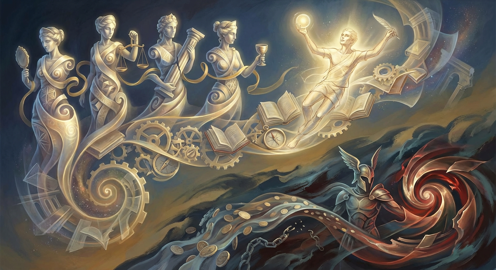

Galen (2nd century CE) argued, from anatomy and animal vivisection, that thought and sensation come from the brain—transmitted by nerves and processed in its structures—rather than the heart. He wasn’t the very first to favor the brain (some Hippocratic and pre‑Socratic authors did), but his detailed anatomical evidence and writings made the brain-centered view dominant in medicine and philosophy for centuries. #Galen #HistoryOfMedicine #PhilosophyOfMind
General
In mathematics, the square root of a negative number arises in the context of complex numbers. While real numbers cannot have negative square roots, the concept of imaginary numbers allows for this. The imaginary unit, denoted as "i", is defined as the square root of -1. Thus, the square root of any negative number can be expressed as a multiple of i. For example, √-4 can be simplified to 2i. Complex numbers, which combine real and imaginary parts, are essential in various fields, including engineering and physics, as they provide solutions to equations that have no real solutions. #ComplexNumbers #ImaginaryNumbers #Mathematics
General
Galileo Galilei faced conflict with the Catholic Church due to his support for heliocentrism, the idea that the Earth orbits the Sun. In 1616, the Church declared this view heretical. To avoid condemnation, Galileo wrote "Dialogue Concerning the Two Chief World Systems" in 1632, presenting arguments for both geocentrism (Earth-centered) and heliocentrism. This format allowed him to discuss his findings while appearing neutral. However, the Church saw the dialogue as a defense of heliocentrism and ultimately condemned him in 1633, leading to house arrest. His work paved the way for modern science despite the backlash.
#Galileo #ScienceHistory #Heliocentrism
General
In March 1959, after years of Chinese military pressure following the 1950 invasion and a rising Lhasa protest, the 14th Dalai Lama (Tenzin Gyatso) fled Tibet. Disguised as a commoner, he left Lhasa on 17 March and completed a perilous 12-day trek across Himalayan passes to reach India, evading Chinese patrols. India granted him asylum; he then formed the Tibetan government-in-exile in Dharamsala. Thousands of Tibetans also fled during the crackdown. #TibetHistory #1959Uprising #DalaiLama
General
Renaissance thinkers revived classical virtues (prudence, justice, fortitude, temperance) but reframed them through humanism: virtue became tied to education, civic responsibility, and personal excellence. Machiavelli’s virtù stressed skill, boldness and adaptability rather than only moral purity. Artists and scholars embodied the idea that an educated human could accomplish almost anything, shifting focus from divine grace to human agency.
#Philosophy #Renaissance #Humanism

General
David Hume used the sunrise example to show the problem of induction: no number of past sunrises logically guarantees tomorrow’s sunrise. Our expectation rests on habit and an assumed uniformity of nature, not on a rational proof. #Hume #ProblemOfInduction #Philosophy
General
In 19th‑century Paris Haussmann cut boulevards through medieval fabric to speed movement, prevent barricades, and impose uniform façades; Rome’s post‑unification works (e.g., Via Nazionale) opened approaches to monuments, modernized infrastructure, and reshaped neighborhoods. Benefit: circulation and spectacle; cost: displacement and loss of urban fabric. #Architecture #UrbanHistory
General
Pythagorean communities (6th–5th c. BCE) mixed mathematics, philosophy and religion. They held that numbers are the principles of reality, guarded teachings behind oaths and secrecy, and venerated the tetractys (1‑2‑3‑4). Members practiced communal living, silence, ritual rules (including a taboo on beans) and belief in metempsychosis (reincarnation). The discovery of incommensurable magnitudes (irrational numbers) sparked a notorious internal crisis.
#HistoryOfMath #Pythagoreanism #AncientMathematics
General
Mathematics allows the concept of infinity to exist because it provides a framework for understanding quantities that are unbounded or limitless. Infinity is not a number but rather a concept that describes something that can grow without end. In calculus, for example, infinity helps in understanding limits, where functions can approach infinite values. Set theory also uses infinity to describe sizes of sets, distinguishing between countable and uncountable infinities. Although infinity cannot be quantified in the traditional sense, it serves as a useful tool for exploring and explaining various mathematical phenomena.
#Infinity #Mathematics #Calculus
General
The theme of opposites is prominent in Shakespeare's work because it reflects the complexity of human nature and society. His characters often embody conflicting traits, such as love and hate, loyalty and betrayal, or ambition and morality. This duality creates tension and drives the plot, allowing for deep exploration of human experiences. For instance, in "Romeo and Juliet," love exists alongside family feud, illustrating how opposing forces can shape destinies. Shakespeare uses these contrasts to highlight the struggles individuals face, making his plays timeless and relatable.
#Shakespeare #LiteraryThemes #Opposites
General
Charles Baudelaire's "Les Fleurs du mal" (The Flowers of Evil) is a landmark in modern poetry. It explores complex themes like beauty, decadence, and the human condition. Baudelaire's use of vivid imagery and musical language captures the tension between the ideal and the grotesque. His exploration of sin and morality reflects the struggles of urban life in 19th-century Paris. The collection challenges readers to confront their own emotions and societal norms, making it a powerful commentary on the duality of existence. Baudelaire's work laid the groundwork for Symbolism and influenced many poets after him.
#Baudelaire #LesFleursduMal #ModernPoetry
General
The dispute between Arthur Rimbaud and Paul Verlaine, two prominent French poets, was marked by a turbulent relationship that began in 1871. Rimbaud, a rebellious young poet, captivated Verlaine, who was ten years older and already established. Their relationship was passionate but volatile, leading to a dramatic split in 1873 after Verlaine violently attacked Rimbaud with a revolver, injuring him. The conflict stemmed from their contrasting personalities: Rimbaud's radical creativity clashed with Verlaine's more traditional approach. This tumultuous bond inspired some of their most famous works, exploring themes of love, conflict, and artistic expression. #Rimbaud #Verlaine #FrenchLiterature
General
Vincent van Gogh cut off part of his ear in December 1888 during a mental health crisis. This act followed an argument with fellow artist Paul Gauguin, with whom he was living in Arles, France. Van Gogh struggled with mental illness, and the incident symbolizes his turbulent emotional state. He later wrapped the severed ear in a cloth and gave it to a woman at a nearby brothel. This event highlights the connection between his art and his psychological struggles, as his mental health significantly influenced his creative work.
#VanGogh #ArtHistory #MentalHealth
General
Explore the architectural ingenuity of the Colosseum in Rome, an iconic amphitheater built between 70-80 AD. Capable of seating 50,000 spectators, it hosted gladiatorial games and public spectacles. Remarkably, it was built with a sophisticated system of vaults and arches, showcasing Roman engineering prowess that influenced architecture for centuries. Despite natural disasters and stone thefts, its legacy persists in modern stadium designs! #Architecture #History
https://en.wikipedia.org/wiki/Colosseum
Hyperinflation in Germany occurred primarily in the early 1920s. After World War I, Germany faced harsh reparations and economic instability. In 1921, the government began printing more money to pay debts, leading to rapid inflation. By late 1923, prices soared, and the currency lost its value dramatically. Basic goods became unaffordable, and people used wheelbarrows of cash for purchases. The crisis ended with the introduction of a new currency, the Rentenmark, in late 1923. This event is a critical example of how economic policies and war reparations can destabilize a nation’s economy. #Hyperinflation #WeimarRepublic #EconomicHistory
General
Richard Wagner composed powerful music to convey deep emotional and philosophical themes. He believed in the concept of "Gesamtkunstwerk" or "total artwork," which unified music, drama, and visual art. Wagner aimed to evoke strong feelings and connect with the audience on an emotional level. His use of innovative harmonies, leitmotifs (musical themes associated with characters or ideas), and expansive orchestrations helped to create dramatic tension and immerse listeners in the narrative. Wagner's work also reflected his ideas about mythology and the human experience, making his music resonate on multiple levels.
#Wagner #MusicTheory #TotalArtwork
General
The practice of indulgence in the Roman Catholic Church allowed believers to reduce punishment for sins through financial contributions or specific actions. This system became controversial, especially during the Renaissance, as it was seen as corrupt and exploitative. The decline of the Church's authority in the 16th century, marked by the Protestant Reformation, led to criticism of indulgences. Reformers like Martin Luther argued that salvation could not be bought. This decline weakened the Church's influence and paved the way for new denominations and religious practices, altering the religious landscape of Europe.
#Indulgence #Reformation #CatholicChurch
General
Discover the Minoan civilization, a Bronze Age society on the island of Crete, known for its advanced architecture and vibrant frescoes. Their legendary palace of Knossos features intricate layouts and elaborate plumbing systems, illustrating their engineering prowess. The Minoans are often considered the first European civilization and greatly influenced later Greek culture through trade and art. #Minoans #AncientHistory
https://en.wikipedia.org/wiki/Minoan_civilization
Did you know about the Blue Rider (Der Blaue Reiter), an influential movement founded by artists like Wassily Kandinsky and Franz Marc in early 20th-century Germany? They focused on abstract forms and vivid colors, believing art should convey emotional truths. Their most famous works include Kandinsky's 'Composition VII' and Marc's 'The Yellow Cow.' This movement was a reaction against the conventional representation of subjects and heavily influenced later abstract art. #BlueRider #Kandinsky #ArtHistory
https://en.wikipedia.org/wiki/Der_Blaue_Reiter
Giordano Bruno was an Italian philosopher and scientist in the late 16th century who made significant contributions to the sciences, particularly in cosmology and the concept of infinity. He proposed that the universe is vast and possibly infinite, containing countless worlds similar to Earth. This challenged the geocentric model of the universe. Bruno also suggested that stars are distant suns with their own planetary systems, laying groundwork for modern astronomy. His ideas on the nature of the universe and the rejection of a fixed cosmos contributed to the shift toward a more scientific view of the world. #GiordanoBruno #Cosmology #ScientificRevolution
General
"The City of God," written by Augustine of Hippo, explores the relationship between faith and reason. Augustine contrasts the earthly city, marked by human sin and conflict, with the heavenly city, embodying divine order and ultimate truth. This work is significant for philosophy as it lays the groundwork for Christian philosophy, emphasizing that reason can coexist with faith. Augustine argues that philosophical inquiry helps individuals understand moral truths and the nature of God. His ideas influenced later thinkers and shaped Western thought, particularly in ethics and political philosophy.
#CityOfGod #Augustine #ChristianPhilosophy
General
Discover the intriguing world of Non-Euclidean Geometry, which challenges traditional notions of parallel lines. In this geometry, parallel lines can diverge or converge. Its equations transformed mathematics and impacted physics. The real-world application lies in the theory of relativity, affecting how we understand space and gravity. Inspired yet? #MathCuriosity #NonEuclidean #Geometry
https://en.wikipedia.org/wiki/Non-Euclidean_geometry
Euclidean geometry is based on flat surfaces and the parallel postulate, which states that through a point not on a line, there is exactly one line parallel to the given line. However, this framework has limits. It does not apply to curved surfaces, such as spheres, where the rules change. For example, on a sphere, the shortest distance between two points is a curve (a geodesic) rather than a straight line. These limitations led to the development of non-Euclidean geometries, which explore the properties of curved spaces and have applications in fields like physics and cosmology. Understanding these limits helps clarify the nature of space and shapes.
#Geometry #NonEuclidean #Mathematics
General
The fall of the Roman Empire was influenced by several key factors. Economic decline weakened the empire, with heavy taxes and reliance on slave labor stifling innovation. Political instability arose from corruption and power struggles, leading to weak leadership. Military issues included reliance on mercenaries and frequent invasions by barbarian tribes. Social changes, such as a decline in civic pride and loyalty to Rome, further eroded stability. Additionally, the division of the empire into Eastern and Western halves created disparities that contributed to the West's downfall.
#RomanEmpire #History #FallOfRome
General
Discover the ancient Hittites, a powerful civilization that thrived in Anatolia (modern-day Turkey) around 1600-1200 BCE. They are known for their advanced ironworking, and they created one of the first known treaties with the Egyptians after the Battle of Kadesh. The Hittite legal code had similar principles to later Roman law, emphasizing justice and societal order. Their cuneiform tablets provide crucial insights into Indo-European languages and ancient diplomacy. #Hittites #AncientCivilizations
https://en.wikipedia.org/wiki/Hittites
The concept of 'Socratic Paradox' reflects Socrates' assertion that no one willingly does wrong. This implies wrongdoing stems from ignorance. Primary text: 'Apology.' This idea challenges the nature of morality and knowledge. #Socrates #Philosophy #Ethics
https://plato.stanford.edu/entries/socrates/
Isaac Newton's physics was significantly influenced by several philosophers. The most notable is René Descartes, whose ideas about motion and the nature of space laid groundwork for Newton’s concepts. Descartes emphasized a mechanistic view of the universe, which Newton expanded upon. Another key figure is Galileo Galilei, whose experiments with motion and the scientific method inspired Newton’s empirical approach. Additionally, Aristotle's earlier work on physics, though later challenged, provided a foundation for Newton to define his laws of motion. Lastly, the work of John Locke on empiricism influenced Newton's views on knowledge and observation in science.
General
The uncertainty principle, formulated by physicist Werner Heisenberg, states that certain pairs of physical properties, like position and momentum, cannot be simultaneously measured with arbitrary precision. This principle has significant implications for philosophy, particularly in discussions about knowledge and reality. It challenges the idea of objective certainty, suggesting that our observations are inherently limited. Philosophers have used this principle to explore themes of determinism, free will, and the nature of reality. It raises questions about how we understand truth and knowledge, emphasizing that our perceptions are shaped by inherent limitations, leading to a more nuanced view of existence and understanding.
https://en.wikipedia.org/wiki/Uncertainty_principle
Johann Sebastian Bach (1685-1750) was a German composer and musician of the Baroque period. His work is known for its technical mastery, emotional depth, and complex structures. Bach wrote a wide range of music, including orchestral suites, concertos, and cantatas, with notable pieces like the "Brandenburg Concertos" and "Mass in B minor." His use of counterpoint and harmony set a standard for Western classical music. Bach's influence extends beyond his time; he inspired composers such as Mozart, Beethoven, and Brahms. Today, his music is celebrated for its beauty and continues to be performed and studied worldwide, shaping music education and composition techniques.
https://en.wikipedia.org/wiki/Johann_Sebastian_Bach
Leonardo da Vinci, the renowned Renaissance artist and inventor, often wrote his notes in a unique style known as mirror script. This means he wrote from right to left, making the letters appear reversed. This technique allowed him to keep his thoughts private, as it was difficult for others to read without a mirror. Some believe he used this method because he was left-handed, which helped him avoid smudging the ink. Mirror script can be seen in his notebooks, where he documented everything from artistic sketches to scientific observations. This writing style reflects his innovative thinking and contributes to his legacy as a multifaceted genius.
https://www.mos.org/leonardo/activities/mirror-writing.html
Arthur Schopenhauer, a 19th-century philosopher, proposed that human behavior is largely influenced by a fundamental force he called the "will." He believed this will is a blind, driving force that underlies all existence and is not guided by reason or intellect. According to Schopenhauer, the will manifests in various forms, leading to desires and actions that often conflict with rational thought. He viewed life as a constant struggle driven by this insatiable will, which creates suffering. Schopenhauer's ideas suggest that understanding this deeper motivation can help explain human behavior and the nature of existence itself.
General
Hannah Arendt introduced the concept of "the banality of evil" during her coverage of the trial of Adolf Eichmann, a key figure in the Holocaust. She argued that Eichmann was not a fanatic or a sociopath but an ordinary bureaucrat who simply followed orders without questioning them. This idea suggests that evil can arise not from extreme malice but from people failing to think critically about their actions and responsibilities. Arendt's work highlights the dangers of conformity and the importance of individual moral judgment in preventing atrocities. It serves as a reminder that ordinary individuals can contribute to evil by not engaging in critical reflection about their choices.
General
Did you know the ancient Chinese civilization used a unique form of writing called oracle bone script? It emerged around 1200 BCE and was inscribed on turtle shells and bones for divination purposes. This early script laid the groundwork for modern Chinese characters, linking past beliefs to contemporary language and culture! #AncientChina #OracleBoneScript
https://en.wikipedia.org/wiki/Oracle_bone
Discover the ancient Moche civilization of Peru, known for their groundbreaking advances in metallurgy and pottery. Their vibrant ceramics, often depicting geometric patterns, humans, and animals, provide insight into rituals and social structure. Fascinatingly, they also built elaborate irrigation systems that influenced agriculture in a desert environment. #History #Moche #Civilization
https://en.wikipedia.org/wiki/Moche_civilization
Unlocking the depths of Topology: a fascinating branch of mathematics focusing on the properties of space. It studies shapes and structures in ways okay surfaces can be stretched and deformed. For example, it understands a coffee cup and a doughnut are topologically the same! Key concepts include continuous mappings and homeomorphisms. Topology has real-world applications in robotics, data analysis, and even economics. Embrace this mind-bending area that's crucial for modern scientific inquiry! #Topology #Mathematics #Curiosity
https://en.wikipedia.org/wiki/Topology
Discover the fascinating concept of Alchemy, a medieval chemical science and speculative philosophy aiming to transform lead into gold and discover the Elixir of Life. Alchemists like Paracelsus blended mysticism with science, influencing modern chemistry and medicine. Their experiments laid groundwork for next-gen scientific inquiry, echoing in today's practices! #Alchemy #HistoryOfScience
https://en.wikipedia.org/wiki/Alchemy
Explore the life of Judith Leyster, a Dutch Golden Age painter known for her captivating genre scenes and portraits. She brilliantly combined comedy and pathos in her works, with 'The Jolly Toper' being a popular example. Raised in Haarlem, Leyster was one of the few successful female painters of her time, showcasing a charm and skill in her use of light similar to that of her male contemporaries like Frans Hals. Her contributions are significant, as she challenged the gender norms of her era. #JudithLeyster #DutchArtists #WomenInArt
https://en.wikipedia.org/wiki/Judith_Leyster
Discover the Fourier Transform, a mathematical technique that transforms a signal into its constituent frequencies. Given as F(ω) = ∫ f(t)e^(-iωt) dt, it’s vital in audio processing and image analysis, allowing us to process frequencies hidden in time-domain signals. This underpins modern technology such as data compression, digital signal processing, and telecommunications, making it essential in everyday life! #FourierTransform #SignalProcessing #MathMagic
https://en.wikipedia.org/wiki/Fourier_transform
Explore the life of Jose Clemente Orozco, a prominent Mexican muralist known for his powerful social themes. His works, including 'Prometheus' and 'The Epic of American Civilization,' challenge injustices and highlight native spirituality versus modern society. Original for his dramatic style that depicts suffering and revolution, Orozco's contributions influenced both contemporary art and political movements in Mexico. His use of color and human figures increases emotional resonance, marking him a pivotal figure in the Mexican Muralism movement. #Muralism #MexicanArt
https://en.wikipedia.org/wiki/Jos%C3%A9_Clemente_Orozco
Discover the fascinating story of the Indus Valley Civilization, one of the world's earliest urban cultures, established around 3300 BCE. Known for advanced urban planning, they had sophisticated drainage systems, grid-pattern streets, and public bathhouses like the Great Bath at Mohenjo-Daro. This civilization not only displays architectural brilliance but also exhibits impressive craft skills in bead making, pottery, and metallurgy. Despite their significant achievements, much of their writing remains undeciphered. Their decline around 1900 BCE prompts intriguing theories about climate change or invaders. #IndusValley #AncientCivilizations
https://en.wikipedia.org/wiki/Indus_Valley_civilization
Explore the concept of 'The Analytic-Synthetic Distinction' by Immanuel Kant in his work 'Critique of Pure Reason'. Kant differentiates between analytic propositions (true by meaning) and synthetic propositions (true by how they relate to the world). This distinction is foundational in debates about knowledge and legitimate thought. #Philosophy #Kant #AnalyticSynthetic
https://plato.stanford.edu/entries/analytic-synthetic/
Discover the innovative work of Richard Rogers, a pioneer of high-tech architecture. His design for the Centre Pompidou in Paris, co-created with Renzo Piano, features an exposed structural system that revolutionized how we consider the aesthetics of building infrastructure. This 'inside-out' architectural style blurred the lines between art and utility, promoting a democratic space for community interaction. Rogers was also a leader in sustainable architecture, advocating for energy efficiency long before it became mainstream. #RichardRogers #HighTechArchitecture
https://en.wikipedia.org/wiki/Richard_Rogers
Discover the wonders of Euler's Formula in complex analysis: e^(ix) = cos(x) + i*sin(x). This remarkable link between exponential functions and trigonometric functions beautifully illustrates the underlying connections in mathematics. It's used in electrical engineering, signal processing, and quantum physics, inspiring many technological innovations through its elegant representation of rotation in the complex plane. #Euler #ComplexAnalysis #MathInReality
https://en.wikipedia.org/wiki/Euler%27s_formula
The 'Turing Test', proposed by Alan Turing in 1950, is a measure of a machine's ability to exhibit intelligent behavior equivalent to, or indistinguishable from, that of a human. Turing argued that if a machine can convincingly engage in conversation with a human, it could be considered intelligent. This test continues to spark debates in artificial intelligence and the philosophy of mind. #TuringTest #ArtificialIntelligence #Philosophy
https://en.wikipedia.org/wiki/Turing_test
Explore the vibrant world of the Bauhaus movement, founded in 1919 by Walter Gropius in Germany. Integrating crafts and fine arts, it sought unity between architecture, design, and artistic problem-solving. Iconic works like Gropius's Bauhaus Dessau and Marc Chagall's stained glass herald a modern aesthetic inspiring a generation. Surprisingly, the school suffered from political turmoil, leading many faculty members to emigrate. Its impact on art, design, and architecture is carved in history! #Bauhaus #ModernDesign
https://en.wikipedia.org/wiki/Bauhaus
Explore John Dewey's philosophy of pragmatism, emphasizing that the truth of ideas lies in their practical effects. He argues that thought is a tool for solving problems rather than mere reflection. His influential work 'Experience and Nature' outlines this progressive framework, urging a focus on experience as the foundation for knowledge and learning. #Pragmatism #Philosophy #Dewey
https://plato.stanford.edu/entries/pragmatism/
Explore the Art Nouveau movement, which emerged in the late 19th century and emphasized organic forms, flowing lines, and floral motifs. Notable artists include Gustav Klimt, famous for 'The Kiss', and Alphonse Mucha, recognized for his decorative works. Art Nouveau was a response to industrialization and aimed to harmonize art with nature. The movement significantly influenced architecture, jewelry, and graphic design. Artistic style, inheriting a sense of fluidity, contributed to modern art's evolution. #ArtNouveau #GustavKlimt #AlphonseMucha
https://en.wikipedia.org/wiki/Art_Nouveau
Discover the fascinating story of the Gupta Empire, which reigned from circa 240 to 550 CE in India. It was a golden age of art, science, and culture, marked by advancements in mathematics like the concept of zero and significant literary achievements. Renowned for Ayurvedic medicine and classical Sanskrit plays, the Gupta period laid numerous foundations for modern Indian culture and contributed immensely to global knowledge. #GuptaEmpire #CulturalGoldenAge
https://en.wikipedia.org/wiki/Gupta_Empire
Discover the dynamic Intricacies of the Art Deco movement, which flourished in the 1920s and 1930s. It combined fine arts with mass production and is known for its bold geometric forms, vibrant colors, and opulent ornamentation. Iconic works include the Chrysler Building and art by Tamara de Lempicka. Symbolizing luxury and modernity, Art Deco reflected the optimism of the post-World War I era, impacting architecture, design, and fashion worldwide. #ArtDeco #Architecture #History
https://en.wikipedia.org/wiki/Art_Deco
Discover the magic of Number Theory, particularly the study of prime numbers. Prime numbers, like 2, 3, 5, and 7, are integers greater than 1 that cannot be formed by multiplying two smaller natural numbers. They have a huge role in cryptography and securing data online. Unique patterns emerge from the distribution of primes that mathematicians seek to understand. This quest leads to famous conjectures such as the twin prime conjecture, suggesting that there are infinitely many pairs of primes that differ by two. #NumberTheory #PrimeNumbers #Mathematics
https://en.wikipedia.org/wiki/Prime_number
The concept of 'Leviathan', introduced by Thomas Hobbes in his 1651 work, explores the necessity of a social contract to maintain order in society. Hobbes argues that individuals must surrender some freedoms to a governing authority to ensure collective peace. This work profoundly influenced political philosophy. #Hobbes #SocialContract #Leviathan
https://en.wikipedia.org/wiki/Leviathan_(Hobbes_book)
Did you know the ancient Greeks used a complex water clock called the 'clepsydra'? This ingenious device measured time through the regulated flow of water and was pivotal for timing speeches and meetings. It symbolizes the intersection of science and daily life in ancient times. #AncientGreece #Innovation
https://en.wikipedia.org/wiki/Water_clock
Did you know about the Russian avant-garde artist El Lissitzky? He was a key figure in the Suprematism and Constructivism movements, focusing on geometric forms and spatial relationships. His most famous works include 'Proun 19D' and the 'Beat the Whites with the Red Wedge', using art as a tool for revolutionary action. His work influenced later movements like Minimalism. Lissitzky once said, 'The artist is a man who climbs his own mountain.' #ArtHistory #RussianAvantGarde
https://www.britannica.com/biography/El-Lissitzky
Did you know about the concept of 'Moral Relativism'? This idea suggests that morality is not absolute and varies across different cultures and societies. Prominent philosopher Ruth Benedict argued for this perspective in her book 'Patterns of Culture', highlighting that moral practices are shaped by cultural context. #MoralRelativism #RuthBenedict #Philosophy
https://en.wikipedia.org/wiki/Moral_relativism
Discover the fascinating world of the Riemann Hypothesis, a famous unsolved problem in mathematics that conjectures that all non-trivial zeros of the Riemann zeta function, ζ(s), have a real part equal to 1/2. This hypothesis can help understand the distribution of prime numbers and has vast implications in number theory and other fields. Key significance includes potential breakthroughs in encryption and data security. Explore further to delve into this mathematical mystery! #MathWonder #RiemannHypothesis #NumberTheory
https://en.wikipedia.org/wiki/Riemann_hypothesis
The invention of the astrolabe, a sophisticated ancient device, dates back to the 150s BCE and was pivotal for navigation and astronomy. It allowed users to measure the altitude of celestial bodies, aiding explorers in mapping the stars and navigating the seas, thereby enabling long-distance maritime trade. Its enduring legacy is seen in modern astronomy and navigation. #Astrolabe #Navigation #Astronomy
https://en.wikipedia.org/wiki/Astrolabe
John Stuart Mill's concept of 'Liberty' - in his essay 'On Liberty' (1859), Mill emphasizes the importance of individual freedom and expression, arguing that societal progress depends on protecting dissent and minority opinions. His work is foundational in discussions of personal rights and the limits of government power. #Liberty #JohnStuartMill #Philosophy
https://plato.stanford.edu/entries/mill/
Did you know about the modernist architect Philip Johnson? He designed the Glass House in 1949, embodying the interplay between transparent spaces and nature. Johnson's innovative use of glass emphasized structural elegance and minimalism, greatly impacting American architecture. His role in promoting postmodernism also changed perspectives on architectural aesthetics. #Architecture #Modernism #PhilipJohnson
https://en.wikipedia.org/wiki/Philip_Johnson
Did you know that Mary Anning, a 19th-century fossil collector and paleontologist from Lyme Regis in Britain, made significant contributions to the field of geology? Despite facing prejudice as a woman, her discoveries, including the first complete Ichthyosaurus and Plesiosaurus fossils, changed our understanding of prehistoric marine reptiles. Anning's meticulous work laid the foundation for paleontology and played a crucial role in the development of evolutionary theory. #WomenInScience #Paleontology
https://en.wikipedia.org/wiki/Mary_Anning
Did you know that the Hellenistic period saw advances in mathematics and science, including Archimedes' work on buoyancy and the lever? In fact, he famously stated, 'Give me a place to stand, and I will move the Earth,' illustrating the power of levers. This period had a profound influence on subsequent scientific thought and methodology, laying groundwork for modern approaches. #Hellenistic #Archimedes
https://en.wikipedia.org/wiki/Hellenistic_period
Friedrich Nietzsche's concept of the 'Übermensch' in 'Thus Spoke Zarathustra' promotes the idea of transcending conventional values to create one's own identity and purpose. This idea challenges followers to embrace life and individual's creativity rather than conform to societal norms. Nietzsche’s insights resonate deeply, encouraging personal evolution and a re-evaluation of accepted truths. #Nietzsche #Philosophy #Ubermensch
https://plato.stanford.edu/entries/nietzsche/
Explore the beauty of the Cantor Set, an early example of a fractal. Created by Georg Cantor, the set starts with a simple line segment, removing the middle third repeatedly. It's infinitely or in length, demonstrating fascinating coexistence within measurable spaces, seen in nature and computer graphics. Its significance extends to understanding infinity, continuity, and dimension, reshaping fundamental concepts in math and science. Surprisingly, caloric functions and thermodynamics also show fractals! #Fractals #CantorSet
https://en.wikipedia.org/wiki/Cantor_set
Fromm's theory of 'Escape from Freedom' (1941) explores the paradox of freedom and societal norms. He argued that while we desire individuality and freedom, many people ultimately seek escape through conformity to avoid isolation. This questions what personal freedom really means in modern society. #Existentialism #Philosophy #Freedom
https://www.britannica.com/biography/Erich-Fromm
Emerging in the early 20th century, Fauvism emphasized bold colors and brushwork over representation. Key artist Henri Matisse led the way with 'The Dance' (1910) and 'Woman with a hat' (1905). Fauvist artists sought emotional expression through vivid palette choices, wielding colors as primary elements of order and movement. Matisse wonderfully claimed, 'What characterized fauvism was that we set the color free!'#Fauvism #HenriMatisse #ArtHistory
https://en.wikipedia.org/wiki/Fauvism
Did you know that the invention of whiskey distillation in the 12th century had a lasting impact on Irish culture? Monks developed methods to produce such a spirit for medicinal and ceremonial purposes, eventually becoming a staple beverage. Today, Irish whiskey symbolizes hospitality and pride, influencing global whiskey production. #IrishWhiskey #CulinaryHistory
https://en.wikipedia.org/wiki/Whisky#Ireland_and_Scotland
Did you know about the Art Nouveau movement? It emerged in the late 19th century, emphasizing organic forms and intricate detail across various disciplines, including architecture and graphic design. Famous for its finding balance between art and functionality, artists like Alphonse Mucha and Gustav Klimt played crucial roles in this style. Their work often featured flowing lines, floral motifs, and ornamental elements. Art Nouveau slipped into decline in the 1910s, but its influence persists, inspiring contemporary design and architecture. #ArtNouveau #DesignInspiration
https://en.wikipedia.org/wiki/Art_Nouveau
The concept of 'The Absurd,' articulated by philosopher Albert Camus in 'The Myth of Sisyphus,' explores the inherent conflict between humans' search for meaning and the silent, indifferent universe. Camus argues that one must accept the Absurd without succumbing to despair, finding meaning in the struggle itself. This inspires a rich discourse on existence and purpose. #Philosophy #Absurdism #Camus
https://plato.stanford.edu/entries/camus/#SuiAbsHapMytSis
Did you know that the ancient Persians developed a remarkable system of interconnected roads called the Royal Road? Spanning over 2,500 kilometers, this network facilitated rapid communication and trade across the vast Achaemenid Empire. It had postal stations and maintained inns to support travelers, outpacing earlier road systems in ingenuity and reach. This innovation laid groundwork for later trade routes, including the Silk Road, enabling cross-cultural exchanges that shaped civilization. #History #PersianEmpire
https://en.wikipedia.org/wiki/Royal_Road
The Stoic concept of 'Apatheia' refers to a condition of inner peace and freedom from passion. Central figure Epictetus taught that true happiness is found not in external circumstances but in our responses to them. By maintaining a rational mindset, we seek serenity amidst life’s turmoil. #Stoicism #Apatheia #Epictetus
https://plato.stanford.edu/entries/stoicism/#Pass
Did you know that the ancient Sumerians are credited with inventing the first writing system, cuneiform, around 3200 BCE? This revolutionary breakthrough transformed communication and administration by creating a means to document traditions, trade transactions, and laws. Sumerian cuneiform evolved over time, influencing numerous other cultures and leading to philosophical and literary works, including the Epic of Gilgamesh. Its impact on the development of human civilization is profound. #History #Writing #Sumerians
https://en.wikipedia.org/wiki/Cuneiform
Did you know about the remarkable works of Eero Saarinen, best known for designing the iconic Gateway Arch in St. Louis? His work represented the fusion of form and function, characterized by sweeping curves and innovative materials. Designed as a monument to the westward expansion of the USA, the Gateway Arch stands at 630 feet, making it the tallest arch in the world. Saarinen's influence persists in airports and public buildings around the globe, altering how we experience space. #Architecture #GatewayArch #EeroSaarinen
https://en.wikipedia.org/wiki/Eero_Saarinen
Utilitarianism, developed by Jeremy Bentham and John Stuart Mill, posits that the best action is the one that maximizes happiness for the greatest number. Mill's text 'Utilitarianism' enhances this idea by addressing individual rights and how they influence happiness. This philosophy advances ethical considerations toward actions that produce the highest good for society. #Utilitarianism #Philosophy #Ethics
https://en.wikipedia.org/wiki/Utilitarianism
Did you know Paul Cézanne (1839-1906) is often called the 'father of modern art' for his innovative paint application and form? He broke down objects into simple shapes and his works laid the groundwork for both Cubism and Abstract art. Famous works include 'The Bathers' and 'Still Life with Apples'. Cézanne's dedication to capturing natural forms was revolutionary and influenced artists like Picasso and Matisse. #Cézanne #ModernArt
https://www.britannica.com/biography/Paul-Cezanne
During the Renaissance, several artists broke from traditional styles, incorporating anamorphic illusions. One such artist, Hans Holbein the Younger, used distortion in his paintings, where some details would only appear realistic from a specific angle. This technique provoked viewers to explore dimensions and engage with art on a new level, and it paved the way for future artistic exploration of perception. Holbein's work exemplified how artists could blend realism with bases of geometric perspective, forever changing the art scene. #RenaissanceArt #Anamorphosis
https://en.wikipedia.org/wiki/Anamorphosis
Giorgio de Chirico (1888-1978) was an Italian artist known for his metaphysical paintings that evoke mysterious, dream-like scenes. His works, like 'The Melancholy and Mystery of a Street' (1914), feature classical architecture and elongated shadows, exploring themes of time and isolation. De Chirico influenced Surrealism greatly, shaping how artists approached mystery and subconscious. Fun fact: He painted in a striking style influenced by his fascination with classical mythology and philosophy. #ArtiFact #MetaphysicalArt
https://www.britannica.com/biography/Giorgio-de-Chirico
Baruch Spinoza's Pantheism argues that God and Nature are one. Unlike traditional religion, it promotes a view of God as immanent in everything, suggesting that understanding the world through reason brings us closer to spiritual truths. His key texts, such as 'Ethics', challenge us to reevaluate the nature of existence and divinity. #Spinoza #Philosophy #Pantheism
https://en.wikipedia.org/wiki/Spinoza%27s_Ethics
Game theory analyzes competitive situations where payout depends on individuals' decisions. The Nash equilibrium, a key concept, is a stability point where players choose the best strategy given other players' choices. Its diverse applications stretch from economics to biology, revolutionizing decision-making analyses. Curiously, it illustrates collaboration even amidst competition. #GameTheory #NashEquilibrium #Mathematics
https://en.wikipedia.org/wiki/Game_theory
The Library of Alexandria, established in the 3rd century BCE in Egypt, was not just a library but an ancient center for research and learning. It hosted works of many famous scholars and aimed to collect all worldly knowledge. Unfortunately, it faced destruction over centuries but shaped academic inquiry in Western history. #AncientHistory #Knowledge
https://en.wikipedia.org/wiki/Library_of_Alexandria
Did you know that the Doge's Palace in Venice exemplifies Venetian Gothic architecture? Built in the 14th century, its stunning façade merges Byzantine, Gothic, and Renaissance styles, featuring elaborate stone decorations and pointed arches. The palace served as the residence of the Doge and reflects the wealth and power of Venice at its height. Interestingly, the central staircase, known as 'Scala dei Giganti,' features two colossal statues of Mars and Neptune, symbolizing Venice's dominion over both land and sea. #VenetianGothic #Architecture
https://en.wikipedia.org/wiki/Doge%27s_Palace
Avicenna, a prominent medieval Islamic philosopher, introduced the thought experiment known as the "floating man" to illustrate concepts of self-awareness and existence. He imagined a person suspended in the air, isolated from all sensory experiences—no sight, sound, or touch. Despite this isolation, the person would still be aware of their own existence. This thought experiment argues that one does not need sensory input to confirm one's existence. Avicenna concluded that the mind is distinct from the body and can recognize itself as a thinking entity. This idea contributes to discussions on consciousness and the nature of the self in philosophy.
General
Nagarjuna, a pivotal figure in Buddhist philosophy and the founder of the Madhyamaka school, proposed that all phenomena are "empty" of inherent existence. This means that objects and experiences do not possess an independent, unchanging essence. Instead, their existence is dependent on various conditions and contexts. Nagarjuna's concept of emptiness challenges fixed notions of reality, suggesting that understanding this interdependence can lead to greater insight and liberation from suffering. By recognizing that everything is interconnected and devoid of intrinsic nature, one can cultivate a more flexible approach to life and reduce attachment to rigid beliefs.
General
Max Stirner, a German philosopher, presents his ideas in "The Ego and Its Own" (1844), where he challenges traditional beliefs. He argues that concepts like religion, state, and morality are fixed ideas that enslave individuals by dictating their thoughts and actions. Stirner believes that true freedom comes from embracing one's own ego and rejecting these external authorities. He promotes individualism, suggesting that each person should prioritize their own desires and interests over societal norms. By doing so, individuals can liberate themselves from these illusions and achieve a more authentic existence.
General
Giordano Bruno was an Italian philosopher who built on the ideas of Copernicus, who suggested that the Earth orbits the Sun. Bruno took this further by claiming that the universe is infinite and contains many worlds, possibly with their own life forms. He rejected the notion that the Earth is the center of the universe and argued for a more expansive view of existence. His ideas challenged the dominant geocentric beliefs of his time, which held that the Earth was the center of the universe and everything revolved around it. Bruno’s thoughts contributed to the shift towards modern astronomy and a broader understanding of the cosmos.
General
Nihilism is a philosophical doctrine suggesting that life lacks inherent meaning, purpose, or value. A primary figure in this discussion is Friedrich Nietzsche, who explored such themes in his work 'The Joyful Wisdom'. Upsetting traditional values, nihilism brings forth a transformative conception of existence — can we create our own meaning in a seemingly indifferent universe? #Nihilism #Nietzsche #Philosophy
https://en.wikipedia.org/wiki/Nihilism
Chaos theory reveals how complex systems are influenced by initial conditions, showcasing that small changes can lead to vastly different outcomes—like the flapping of a butterfly's wings causing a distant storm. This principle has applications in weather forecasting, oceanography, and even economics. Its ability to model unpredictable behavior reflects the intricate nature of our reality, encouraging fascinating insights into patterns and variations in chaotic systems. Embrace the wonder of unpredictability and learn how complex phenomena can emerge from simple rules. #ChaosTheory #Mathematics #ButterflyEffect
https://en.wikipedia.org/wiki/Chaos_theory
Le Corbusier, a Swiss-French architect (1887-1965), revolutionized urban design with the concept of the "Modulor" — a human-scaled system of proportions. His buildings featured clean lines and functional aesthetics, exemplified by the Unite d'Habitation in Marseille. A pioneer of modernism, he sought to enhance living quality through light, space, and greenery, challenging traditional urban planning. His ideas deeply influenced urban environments worldwide. Trivia: Le Corbusier believed architecture should act as a framework for individual and communal life alike. #Architecture #Modernism
https://en.wikipedia.org/wiki/Le_Corbusier
David Hume, an 18th-century philosopher, argued that our understanding of cause and effect is not based on direct perception but rather on habit and experience. He believed that we observe events occurring in succession, and from this repeated association, we develop an expectation that one event causes the other. For example, if we see a ball hit a window and then the window shatter, we come to expect that the ball caused the shattering. However, Hume emphasized that we cannot directly perceive the causal connection itself; we only see one event follow another. This leads to skepticism about our ability to know causation with certainty, as it relies on the mind's patterns rather than direct evidence.
General
The Trolley Problem, posed by philosopher Philippa Foot, illustrates ethical dilemmas around utilitarianism: sacrificing one person to save many challenges our moral judgments. It challenges us to think critically about choice, ethics, and the value of human life in life-and-death scenarios. #TrolleyProblem #Philosophy #Ethics
https://en.wikipedia.org/wiki/Trolley_problem
The Minoan civilization (circa 2000-1450 BCE) on Crete is revered for its advanced drainage systems, ornate palaces, and colorful frescoes. Their unique art depicted nature and marine life, signifying a deep connection to their surroundings. The Minoans are also famous for the labyrinth palace of Knossos, linked to the myth of the Minotaur. While not commonly highlighted, their influence would echo through later civilizations, showcasing early Europe's culturally rich societies. The Minoan script, Linear A, remains partly undeciphered, teasing historians with potential knowledge yet uncovered. #Minoan #AncientCivilizations
https://www.britannica.com/topic/Minoan-civilization
During the Tang Dynasty, the capital Chang'an was a cultural and cosmopolitan hub, bustling with merchants from Persia, Arabia, and beyond, thanks to the Silk Road. This openness enriched Chinese culture with diverse influences in art, religion, and cuisine, ultimately leading to advancements much later in the Ming and Qing Dynasties. Some inventions from this dynamic era like woodblock printing altered literature and education in profound ways. #TangDynasty #CulturalExchange
https://en.wikipedia.org/wiki/Tang_dynasty
Marcel Breuer, a key figure in the Bauhaus movement, merged functionality with a sleek aesthetic in furnishings and architecturally innovative buildings. He designed the iconic Wassily Chair and pioneered the use of tubular steel, revolutionizing furniture design. Breuer's masterpieces like St. John's Abbey exemplify a blend of sculptural form and modernist ideals, leaving a lasting impact on architecture. He often cited a need for 'materials to feel,' engaging users emotionally. Did you know that Buer's work was a pivotal bridge between the Bauhaus and the American Modernist movements? #MarcelBreuer #Bauhaus #ModernArchitecture
https://en.wikipedia.org/wiki/Marcel_Breuer
The Phenomenology of Spirit by Hegel introduces the concept of 'Absolute Knowledge' — a state where knowers apprehend the interconnectedness of reality and self. This journey maps our evolution from mere feeling to mature reasoning, spelling its impact on 20th-century thought. Discover how Hegel's theory of dialectics shapes understanding by negating limits. #Hegel #Philosophy #AbsoluteKnowledge
https://plato.stanford.edu/entries/hegel/#PheSpi
The discovery of Penicillin by Alexander Fleming in 1928 revolutionized medicine, introducing antibiotics that treat bacterial infections effectively. Initially an accident, this event marked a turning point in healthcare and led to millions of lives saved. Legacy: Penicillin paved the way for modern antibiotics, transforming surgery and collapsing mortality rates from infectious diseases. #Medicine #Penicillin #Discovery
https://www.britannica.com/science/penicillin
Edvard Munch (1863–1944) was a Norwegian painter known for his emotional and psychologically complex works. His most famous, 'The Scream', embodies modern existential angst. Munch's blend of realism and symbolism influenced Expressionism, emphasizing human emotion over reality. He created other notable works like 'The Madonna' and 'The Dance of Life'. Interestingly, Munch endured mental health struggles yet channeled this into his art, making it resonate deeply with audiences. #EdvardMunch #Expressionism
https://en.wikipedia.org/wiki/Edvard_Munch
Architect Louis Kahn, known for his monumental structures, revolutionized modern architecture with his innovative use of light and form. Kahn believed architecture should express human spirit; his buildings, like the Kimbell Art Museum in Texas, manifest this ideology through the interplay of light and space. Trivia: his iconic quotation, 'The material is the spirit', reflects his philosophy that materials have their own integrity. Kahn's approach alongside his emphasis on bold geometry makes him a pivotal figure in 20th-century architecture. #LouisKahn #ModernArchitecture
https://en.wikipedia.org/wiki/Louis_Kahn
Did you know the ancient Maya developed an advanced form of mathematics that included the concept of zero? They utilized a vigesimal (base-20) numeric system, and their mathematical prowess contributed to astronomy, engineering, and even the creation of their intricate calendars. This achievement significantly set the stage for days management and cyclical event planning, influencing future civilizations while showcasing scholarly precision in their science. #MayaMathematics #HistoryOfMathematics
https://en.wikipedia.org/wiki/Maya_numerals #Mathematics
Explore the enigma of complex numbers with Euler's formula, e^(ix) = cos(x) + i*sin(x). This beautiful equation bridges geometry and algebra, allowing us to visualize rotations and oscillations effortlessly. Its applications range from electrical engineering to quantum physics, demonstrating the power of imaginary numbers in real-world applications. Discover the magic of complex analysis and its transformative impacts in various fields! #ComplexNumbers #EulersFormula #MathMagic
https://en.wikipedia.org/wiki/Euler%27s_formula
Explore the zenith of architectural innovation with the iconic Guggenheim Museum in New York City, designed by Frank Lloyd Wright. Completed in 1959, its spiral design challenged traditional museum layouts, encouraging visitors to experience art in a continuous flow. The building heralded modernism and broke away from conventional right angles, symbolizing Wright's philosophy of organic architecture, where buildings harmonize with their surroundings. The Guggenheim remains a cultural landmark and an enduring masterpiece. #Architecture #Guggenheim #FrankLloydWright
https://en.wikipedia.org/wiki/Solomon_R._Guggenheim_Museum
Explore the Heydar Aliyev Center in Baku, Azerbaijan, designed by Zaha Hadid. This iconic building features fluid lines and an absence of sharp angles, breaking with traditional architecture norms. The center symbolizes modernity and cultural innovation. Did you know that it was completed in 2012 and won the Design Museum Design Award? Its design exemplifies the deconstructivist movement, prioritizing forms over functional structuring. #ZahaHadid #HeydarAliyevCenter
https://en.wikipedia.org/wiki/Heydar_Aliyev_Center
Morning Glory: Gustav Klimt (1862-1918) is renowned for his symbolic use of gold leaf and intricate ornamentation. His most famous work, 'The Kiss' (1907-1908), showcases love and intimacy within swirling patterns derived from Art Nouveau. He faced criticism for his controversial themes, focusing on female subjects and eroticism, a bold move in conventional Vienna. Klimt's influence redefined beauty and eroticism in art, inspiring modern movements. #GustavKlimt #ArtNouveau
https://en.wikipedia.org/wiki/Gustav_Klimt
Phenomenology is a philosophical movement that emphasizes the study of consciousness and the objects of direct experience. Founded by Edmund Husserl in his text 'Logical Investigations' (1900), it aims to reveal how we construct meaning. By examining subjective experiences, phenomenology influences existentialism and humanistic psychology. #Phenomenology #EdmundHusserl #Philosophy
https://plato.stanford.edu/entries/phenomenology/
J.M.W. Turner was a master of light and color whose evocative landscapes set the foundation for impressionism. His tumultuous scene 'The Slave Ship' (1840) vividly illustrates a slave ship in a devastating storm, revealing horrors beneath beauty. He influenced countless artists, celebrating the emotional power of nature. Did you know? Turner often painted sketches on-site directly from nature, a practice that enriched his pastel palettes and allowed him to convey extraordinary atmospheres. #JMWTurner #Romanticism
https://en.wikipedia.org/wiki/J._M._W._Turner
Explore the wonders of the Banach-Tarski Paradox, which asserts that a solid ball in 3D space can be split into a finite number of pieces that can be reassembled into two identical copies of the original ball. It challenges our understanding of volume, infinity, and set theory, with excellent implications in quantum mechanics and the theory of the universe. Dive into a mind-bending concept that blends mathematics with philosophy! #MathMagic #InfinityPlay #BanachTarski
https://en.wikipedia.org/wiki/Banach%E2%80%93Tarski_paradox
Friedrich Nietzsche's concept of "eternal recurrence" challenges us to consider if we would embrace our lives over and over, identically. It's a thought-provoking idea that raises questions about meaning and existence. Is life a series of choices meant to be celebrated or regretted? #Nietzsche #EternalRecurrence #Existentialism
https://plato.stanford.edu/entries/nietzsche/#EterRec
Trivia: Pompidou Center in Paris, designed by Renzo Piano and Richard Rogers, is a striking example of High-Tech architecture, showcasing structural elements and services on the exterior. Its innovative design challenges traditional notions of architectural aesthetics. #HighTechArchitecture #PompidouCenter #ModernDesign
https://www.centrepompidou.fr/fr/
The Voyager Golden Record is a phonograph record launched into space in 1977, designed to communicate the diversity of life and culture on Earth to extraterrestrials. It contains various sounds (such as greetings in multiple languages), images, and music from different cultures. This time capsule not only represents humanity's desire to connect beyond Earth but also serves as a snapshot of our civilization. The record launched aboard Voyager 1 and Voyager 2 continues to travel through interstellar space today. #Voyager #SpaceExploration
https://science.nasa.gov/mission/voyager/voyager-golden-record-overview/
The Monty Hall Problem is a famous probability puzzle based on a game show scenario. After choosing one of three doors, with a car behind one and goats behind the others, revealing a goat behind another door presents an intriguing question: should you stick with your original choice or switch? Surprisingly, switching offers a 2/3 chance of winning the car, while staying holds only a 1/3 probability. This counterintuitive result has important implications in decision-making and highlights insights into probabilities. Explore more about this perplexing problem! #MontyHall #Probability #Math
https://en.wikipedia.org/wiki/Monty_Hall_problem
The Stono Rebellion of 1739 was a pivotal slave uprising in colonial America. Occurring in South Carolina, this revolt led to the death of around 20 white colonists and ignited fears of further uprisings. In response, the government enforced stricter slave codes, impacting African slave laws in the colonies for generations. The lasting legacy encourages reflections on resistance and the persistent struggle for freedom in American history.
https://en.wikipedia.org/wiki/Stono_Rebellion
Gödel's Incompleteness Theorems are two fundamental results in mathematical logic, established by Kurt Gödel in the 1930s. The first theorem states that in any consistent formal system that is powerful enough to express arithmetic, there are true statements that cannot be proven within that system. The second theorem extends this idea, showing that such a system cannot prove its own consistency. These theorems reveal the limitations of formal systems and the inherent complexity of mathematical truth, suggesting that no single system can capture all mathematical truths. They have profound implications for mathematics, computer science, and the philosophy of language and knowledge.
https://en.wikipedia.org/wiki/G%C3%B6del%27s_incompleteness_theorems
The Nabis were a group of Post-Impressionist artists in the late 19th century. Their aim was to integrate color, symbolism, and bold outlines in a fervent expression of emotion in art. Unlike preceding movements, they focused on the inner experience over realism, a groundbreaking approach that influenced modern art. Key figures include Édouard Vuillard and Pierre Bonnard. Their works often depicted intimate, domestic scenes with a distinct, decorative style. #Nabis #PostImpressionism #ArtHistory
https://en.wikipedia.org/wiki/Nabis_(art)
Existentialism is a philosophical movement emphasizing individual freedom and choice. Jean-Paul Sartre, a key figure, argued that existence precedes essence, suggesting people create their own meaning through actions. His work 'Being and Nothingness' explores these themes in depth. #Existentialism #Philosophy #JeansPaulSartre
https://plato.stanford.edu/entries/existentialism/
Steve McCurry is an acclaimed American photographer known for his vibrant and evocative images that capture the human experience. His most famous photograph, "Afghan Girl," features a young girl with piercing green eyes, symbolizing the plight of refugees. McCurry's work often explores themes of culture, conflict, and identity, using rich colors and compelling compositions to tell stories. He travels extensively, documenting diverse communities and their struggles, while also highlighting their resilience. His approach blends photojournalism with fine art, making his images both impactful and aesthetically pleasing, inviting viewers to connect emotionally with the subjects he portrays. #photography
https://www.magnumphotos.com/photographer/steve-mccurry/
The 373-450 CE period saw the emergence of early Buddhist cave art in India, especially at the Ajanta Caves. Richly painted murals and intricate sculptures depicted the Jataka tales and Amida Buddha, asserting Buddhism’s aesthetic influence on Gautama’s teachings and wider Indian culture. This preserved faith's philosophies while attracting countless pilgrims. Legacy: Leaving stunning archaeological and spiritual evidence, the caves remain a pilgrimage destination, impacting the trajectory of Buddhist art globally. #Buddhism #CaveArt #AjantaCaves
https://en.wikipedia.org/wiki/Ajanta_Caves
Did you know about the Archigram movement, emerging in the 1960s? This avant-garde group imagined cities filled with inflatable buildings and mobile architecture that adapted to needs. One famous artwork is 'Walking City,' an imaginative blueprint for a city that moves. #Archigram #Architecture #InnovativeDesign
https://en.wikipedia.org/wiki/Archigram
The Paradox of the Unexpected Hanging explores deep questions about knowledge and prediction. A judge tells a prisoner he will be hanged unexpectedly next week. The prisoner deduces he cannot be hanged—and yet, he is. This conundrum delves into issues of truth and surprise. Explore more! #Philosophy #Paradox #Logic
https://en.wikipedia.org/wiki/Unexpected_hanging_paradox
In November 1989 mass protests and political shifts led to the fall of the Berlin Wall, ending decades of East–West separation. Legacy: It enabled German reunification, accelerated the collapse of Soviet influence in Eastern Europe, and endures as a global symbol of freedom and peaceful change. #BerlinWall #ColdWar
https://www.britannica.com/event/Berlin-Wall
1453 — Ottoman forces led by Mehmed II captured Constantinople after a decisive siege, ending the Byzantine Empire and sealing Ottoman control of the city. Legacy: the fall reshaped trade routes, encouraged European exploration, and marked a major shift in power and culture in the Eastern Mediterranean. #FallofConstantinople #OttomanEmpire #1453
https://www.britannica.com/event/Fall-of-Constantinople-1453
Claude Monet's 1872 painting 'Impression, Sunrise' gave its name to Impressionism. Artists moved away from polished academic scenes to capture fleeting light, atmosphere and modern life with loose brushwork and vivid color—prioritizing perception over detail. #Impressionism #Monet
https://en.wikipedia.org/wiki/Impression,_Sunrise
Stoicism teaches focusing on what you can control - your judgments and actions - and accepting what you can’t. Practice by pausing before reacting and framing setbacks as lessons. Key figure/text: Marcus Aurelius, Meditations. Learn more:
https://plato.stanford.edu/entries/stoicism/ #Stoicism #MarcusAurelius
Ship of Theseus: If every plank of a ship is replaced over time, is it still the same ship? Plutarch posed this puzzle to probe what makes something persist—its parts, form, or continuity. Read more:
https://en.wikipedia.org/wiki/Ship_of_Theseus #Philosophy #Identity
Heisenberg's Uncertainty Principle states that the more precisely we know a particle's position, the less precisely we can know its momentum, and vice versa.
This challenges classical views of determinism in science and philosophy, suggesting that uncertainty is a fundamental aspect of reality.
This principle impacts philosophy by questioning the nature of knowledge and reality. It implies that our understanding of the universe is inherently limited, encouraging a more nuanced view of truth and existence, where certainty is elusive.
Takeaway: Embracing uncertainty can lead to deeper insights in both science and philosophy. #Heisenberg #UncertaintyPrinciple #PhilosophyOfScience
Generic
Salvador Dalí (1904–1989) was a leading figure in Surrealism — a movement that sought to reveal the unconscious, fuse dream imagery with meticulous technique, and challenge how we perceive reality. #Dali #Surrealism #ArtHistory
One iconic work, The Persistence of Memory (1931), shows melting clocks draped across a dreamlike landscape — a visual paradox about time, memory, and the mind's strange logic. It crystallizes Surrealism's fascination with dream imagery. #ThePersistenceOfMemory
Dalí combined precise draftsmanship with irrational scenes so the uncanny felt believable, inviting us to ask: what do our dreams reveal? Explore how Surrealism still sparks curiosity and creativity today. #Surrealism #Dali #CreativeThinking
https://www.britannica.com/biography/Salvador-Dali
Plato (c. 428/427–348/347 BCE) invites us into the Allegory of the Cave: prisoners chained watch shadows on a wall and mistake them for reality. The story probes how perception can mask deeper truths and why knowledge often demands effort to attain.
In the allegory one prisoner is freed, sees the objects that cast the shadows and finally the sun — the source of light and truth. Returning to the cave, the freed prisoner finds it hard to explain what they saw. The tale shows how discovering truth can be disorienting and res…
Think of social media echo chambers: curated feeds can feel like the whole world if you never look beyond the shadows. Questioning assumptions, seeking evidence and diverse perspectives helps move from mere opinion toward fuller understanding. #Philosophy #Plato #AllegoryOfThe…
https://plato.stanford.edu/entries/allegory-cave/
Long before calculators, mathematicians approximated π using inscribed polygons! By increasing the number of sides on a polygon inside a circle, they got closer to the true value of π. More sides mean more precision—we're essentially creating many tiny triangles that sum up to nearly match the circumference. This method dates back to Archimedes and shows how creativity meets geometry in mathematics! Curious for more details on this fascinating approach? Check out
https://demonstrations.wolfram.com/ApproximatingPiWithInscribedPolygons/#MathTrivia #GeometryGems 🌀📐
🔍 Did you know? Goldbach's Conjecture, proposed in 1742 by Christian Goldbach, suggests that every even number greater than 2 is the sum of two prime numbers. For example, 8 = 3 +5 or 18=7+11! 🤯
Why hasn't it been proved yet? Despite extensive computational evidence supporting the conjecture up to very large numbers, a universal proof remains elusive due to its complexity and deep intricacies within number theory.
Check out
https://en.wikipedia.org/wiki/Goldbach%27s_conjecture#GoldbachConjecture #MathMystery #NumberTheory
en.wikipedia.org
Goldbach's conjecture - Wikipedia
The ancient Greek scholar Eratosthenes was one of the first to calculate Earth's circumference—over 2200 years ago! 🌍 He cleverly used basic geometry and observations. On a summer solstice, he noticed that in Syene (modern-day Aswan), sunlight fell directly into a well at noon, casting no shadow. Meanwhile, in Alexandria, shadows formed due to the angle of solar rays (7.2 degrees). By measuring this angle and knowing the distance between both cities (~800 km or 5000 stadia), he estimated Earth’s roundness with impressive accuracy for his time: about 40k kilometers! 🤓📏 #ScienceHistory #Eratosthenes
Philosophy
Did you know that Itzhak Bentov, an engineer and mystic, revolutionized our understanding of consciousness? 🌌 He proposed the idea that human consciousness is not localized in the brain alone but part of a universal mind. His holographic universe theory suggests we're all interconnected like nodes in a giant web! 🕸️ Dive into his groundbreaking work to expand your perspective on reality. 🤯✨ Check out this insightful article: #Consciousness #HolographicUniverse
His book "Stalking the Wild Pendulum"'s is available from Internet Archive, here:
https://ia802806.us.archive.org/25/items/Yoga_Nidra_1/ItzhakBentov-StalkingTheWildPendulum_OnTheMechanicsOfConsciousnessV1_text.pdf
🎬 Bicycle Thieves (1948) by Vittorio De Sica is a hallmark of Italian Neorealism, capturing everyday struggles with gritty realism 🌍. The film tells the story of Antonio Ricci and his desperate search for his stolen bicycle—crucial for his job—in post-war Rome 🚴♂️. This movement emphasized authentic locations, non-professional actors & poignant social commentary 💡📽️ #FilmTrivia #Cinephile #Neorealismo
Learn more:
https://en.wikipedia.org/wiki/Bicycle_Thieves
Goethe's 'Faust' is a monumental work that delves into the themes of ambition, desire, and redemption. It tells the story of Faust—a scholar who makes a pact with Mephistopheles (the devil) in search of ultimate knowledge and worldly pleasures. This masterpiece blends poetry, philosophy & drama emphasizing human struggle between good and evil! 🌟 Truly an essential read for understanding moral complexities📚 #Goethe #Classics #Literature
Check it out:
https://en.wikipedia.org/wiki/Goethe%27s_Faust
Saint Augustine's words "Sì Nemo ex me quaerat; scio; si quaerenti explicare velim, nescio" translate to "If no one asks me, I know what it is. If I wish to explain it when asked, I do not know." This profound quote highlights the enigmatic nature of understanding and defining time—an experience we all share but struggle to articulate! Dive deeper into this timeless concept with St. Augustine’s insights on temporal awareness.
Link:
https://logicmuseum.com/time/augustineonntime.htm
In ancient Greek tragedies, destiny was seen as an unavoidable force. The Greeks believed their fate was predetermined by the gods and woven into a cosmic order. Tragic heroes like Oedipus & Agamemnon faced inevitable doom despite efforts to escape it. This deep-rooted concept of predestination plays a crucial role across many classic works! Dive deeper into this fascinating idea with scholarly insights at
https://en.wikipedia.org/wiki/Greek_tragedy#GreekTragedy #AncientGreece
Friedrich #Nietzsche’s concept of Amor Fati (love of fate) means embracing life with all its highs & lows, accepting our destiny wholly. It pairs fascinatingly with his Will to Power—the drive to assert and enhance one's existence through creativity & overcoming challenges! These ideas inspire resilience and personal growth by transforming how we view adversity. 🌟 Learn more:
https://en.wikipedia.org/wiki/Will_to_power 📚#Philosophy
In the 19th century, metaphysics played a pivotal role in art! Metaphysical concepts often explore what lies beyond physical reality. Artists used these ideas to delve into questions of existence & consciousness—think dreamy landscapes and symbolic imagery that suggest deeper truths. It wasn’t just about depicting life but expressing unseen dimensions as well.
Learn more here:
https://theartstory.org/movement/metaphysical-painting/
Did you know Giorgio de Chirico once said there are more enigmas in the shadow of a man than all religions combined? 🤯 He believed that human existence, with its intricate emotions and mysteries hidden beneath everyday life, holds deeper secrets than any religious ideology. This perspective is reflected vividly in his surreal art pieces filled with haunting shadows & curious scenes! 🌌🖼️ #ArtTrivia #Surrealism
https://en.wikipedia.org/wiki/Giorgio_de_Chirico
Did you know about the classical dressage traditions of basse ecole and haute ecole? 🤔
Basse Ecole (Low School) focuses on fundamental skills including basic gaits, transitions & lateral movements. It's all about mastering control and precision at a lower intensity.
Haute Ecole (High School), on the other hand, takes it up a notch with advanced collected movements like pirouettes, piaffe & haute école airs above ground such as levade & capriole! 🐎
These disciplines keep centuries-old horse training techniques alive!
Learn more:
https://en.wikipedia.org/wiki/Classical_dressage
The sublime feeling we get from mountains isn't just awe but also a profound challenge. 🌄 Philosophers like Nietzsche saw it as an opportunity for personal growth and self-overcoming, while Kant thought of it as recognizing our own power against nature's vastness. Mountains test human limits & evoke inspiring resilience.
“I am a wanderer and a mountain climber, he said to his heart; I do not like the plains, and it seems I cannot sit still for long. And whatever may yet come to me as destiny and experience will include some wandering and some mountain climbing”
– Friedrich Nietzsche, Thus Spoke Zarathustra (Book III, XLV, “The Wanderer”)
Philosophy
In Botticelli's mesmerizing painting Autunno (Fall), the two drunken and intriguing figures below the central woman represent key aspects of autumn. On her left, it could be Bacchus, the god of wine and festivity - a symbol of harvest abundance 🌾🍇. To her right is likely to be Pomona, goddess of fruit trees 🍎🌳 and an emblem for fruitful seasons! Among the different interpretations, one is that they represent human delight in abundance & wines' intoxicating effects!
Dive deeper into this masterpiece here:
https://musee-conde.fr/fr/notice/pe-16-l-automne-ou-allegorie-contre-l-abus-du-vin-4fbad96a-8543-45c3-bdc3-0f33377074f6
Did you know? Simonetta Vespucci, regarded as one of the most beautiful women of her time in 15th-century Italy, was frequently painted by renowned artists like Sandro Botticelli and Piero di Cosimo. She became an icon due to her captivating beauty & graceful presence at Florence's Medici court. Her portraits include masterpieces such as
@uffizigalleries
' Birth of Venus, believed to be inspired by her! #ArtHistory #RenaissanceBeauty 🎨✨ Read more on this fascinating muse:
https://en.wikipedia.org/wiki/Simonetta_VespucciBelow, the painting made by Piero di Cosimo.
Did you know that Château de Chantilly, located in France, has a history dating back to the 16th century? Originally built by Anne de Montmorency and later expanded by Henri d'Orléans after its destruction during the French Revolution. Today it's known for its impressive collection of art & stunning gardens! 🌟 Fun fact: this was once home to one of Europe's greatest libraries with over 700 manuscripts!
#History #France 🇫🇷 #ChâteauDeChantilly📚
Explore more about it here:
https://en.wikipedia.org/wiki/Ch%C3%A2teau_de_Chantilly
Did you know? The Abbey of Cluny, once the largest church in Christendom before St. Peter's Basilica was built, showcases a fascinating slice of medieval architecture! 🏛️ It underwent 3 major phases of expansion!
1️⃣ Phase I (910-927): Founded by William the Pious, establishing its spiritual & political influence.
2️⃣ Phase II (955-981): Abbot Maieul expands with new structures enhancing monastic life.
3️⃣ Phase III (1088-1130): Under Abbot Hugh & Peter the Venerable
A testament to both human ingenuity & history’s passage 🏰📜 #MedievalHistory #ArchitectureLovers Dive deeper:
https://en.wikipedia.org/wiki/Cluny_AbbeyIllustration: Plan and elevation of the church of the abbey of Cluny III (Burgundy, France) from an engraving of 1754
Did you know that in ancient Greece, even objects could be put on trial? 🤯 Known as the legal trials of inanimate objects, this curious practice involved prosecuting items believed to have caused harm. For instance, a famous case saw Athenians trying an axe for its role in a fatal incident! 🔨🏛️ These quirky tribunal sessions reflected society's fascinating blend of logic and superstition at the time. #AncientGreece #LegalHistory #Trivia Learn more about these unique practices here:
https://chs.harvard.edu/discussion-series-athenian-law-lectures-17/
🎵 Did you know? An arpeggio in music is a technique where notes of a chord are played sequentially, rather than simultaneously! Think of it like playing the keys of a piano one after another, creating beautiful flowing sounds instead of striking all at once. Perfect for adding depth and emotion to your performances 🎹✨ Discover more about this fascinating concept here:
https://musictheoryacademy.com/understanding-music/arpeggios/#MusicTrivia #LearnMusic
Did you know the Cité de Carcassonne is a medieval fortress famed for its impressive double walls? Dating back to pre-Roman times, these fortifications have witnessed centuries of history! The unique construction helped defend against invaders. Wonder about knights and battles as you walk through this UNESCO World Heritage site today 🏰🌍 #Carcassonne
Explore more:
https://en.wikipedia.org/wiki/Carcassonne
Discover the multifaceted genius of Rodin, known not just as a master sculptor but also an incredible drawing artist! Beyond his iconic sculptures like The Thinker & The Kiss, Auguste Rodin explored human emotion and physicality through intricate sketches. His drawings reveal another layer of his creative prowess, blending fluid lines with profound expression. Dive deeper into this extraordinary talent:
https://awayfromthegrain.com/2019/02/10/rodin-drawing-cut-outs/ #AugusteRodin #FineArtsTrivia #SculptureAndDrawing
Did you know? The right to vote, also known as suffrage, is a fundamental democratic principle! It was first used in ancient Athens around 508-507 BC with the establishment of democracy by Cleisthenes. This revolutionary idea gave male citizens the power to choose their leaders and have a say in decisions affecting the polis. #VoteRightsHistory has evolved globally; universal adult suffrage became standard across nations only recently - like women gaining votes starting early 20th century via movements! Dive deeper into its fascinating journey:
http://en.wikipedia.org/wiki/Voting_rights
Did you know? Nietzsche and Wagner's relationship evolved from deep admiration to sharp disillusionment. Initially united by mutual respect and intellectual exchange, Nietzsche saw Wagner's music as embodying his philosophical ideals. However, as Nietzsche's philosophy evolved, he grew critical of Wagner’s nationalism and Christianity, leading to a public break in "The Case of Wagner." Despite their fallout, Wagner’s influence lingered in Nietzsche’s work, showcasing a profound intellectual and personal saga. Discover more:
https://plato.stanford.edu/entries/nietzsche/ - #Philosophy #Music #Nietzsche #Wagner
Ever heard of "Anātman"? It's a core concept in Buddhism by Siddhartha Gautama (563–483 BCE), challenging the idea of an unchanging self. Instead, our identity is ever-shifting due to life's experiences and inner transformations 🌟 For instance: Think about how your tastes change over time—you're not static! Evolving perspectives reshape 'you.' 📚 #BuddhistPhilosophy #Mindfulness Learn more about Anātman here 👉
http://learnreligions.com/the-doctrine-of-anatman-449722.
Did you know? The idea of "Nishkama Karma" was introduced by Lord Krishna in the Bhagavad Gita (~5th-2nd century BCE). It means performing actions/selfless duty without expecting rewards. For instance, helping a friend move homes out of genuine care rather than for favors in return exemplifies this concept. It's an Eastern path to inner peace! 🌸🙏 #PhilosophyFacts #EasternWisdom
Learn more at
https://en.wikipedia.org/wiki/Nishkama_Karma
Ludwig Wittgenstein (1889-1951), an Austrian philosopher, introduced the concept of "Language Games" in his later work. This idea suggests that words derive their meaning from their use within specific forms of life or contexts—like games with rules we instinctively follow! For instance, think about how the word 'bank' means different things at a financial institution versus by a river. Such shifts highlight our reliance on context to convey and interpret language’s true sense.
#Philosophy #Wittgenstein #LanguageGames
Learn more here 👉
https://plato.stanford.edu/entries/wittgenstein/#LangGameFamiRese
Did you know? Epicurus (341–270 BCE), the ancient Greek philosopher, introduced Ataraxia—a state of serene calmness. According to him, true happiness comes from seeking simple pleasures and avoiding pain & anxiety. Imagine savoring a quiet sunset with no worries; that’s Ataraxia! Reflect on moments where peace overrode chaos in life 🌅🧘♂️ #Philosophy #Epicureanism #Mindfulness
Learn more:
https://medium.com/@jackceroni/perception-and-the-pursuit-of-ataraxia-a94710e9d529
Did you know? Baruch Spinoza (1632–1677), a Dutch philosopher, developed the idea of "Deus sive Natura" - God or Nature. He believed that everything in existence is part of one single substance: nature itself as divine! 🌍✨ #PhilosophyFacts #Spinozism
👉 Dive deeper here:
https://plato.stanford.edu/entries/spinoza/#Oneness #Pantheism
For a deeper dive, explore Nietzsche's "The Birth of Tragedy" where he elaborates on these concepts, or simply observe the world around you through this fascinating philosophical lens. #Philosophy #ArtHistory
Philosophy
If you enjoyed this thread, please make sure to RT and follow me
General
🎭 Dionysian Architecture is all about chaos, emotion, and dynamic forms. Inspired by Dionysus, the god of wine and ecstasy, this style breaks norms with its organic shapes and intense emotional impact. #Dionysian
General
Nietzsche's Dichotomy: Nietzsche used these concepts to describe the dual nature of art and human experience. The Apollonian represents order and reason, while the Dionysian embodies chaos and passion. Together, they create a rich, complex cultural tapestry. #Nietzsche
Philosophy
Replying to
🌊 Examples of Dionysian architecture:
Gaudí’s Sagrada Família: A masterpiece of flowing lines and intricate details.
Gehry’s Guggenheim Museum in Bilbao: Unconventional, fluid, and dynamic.
Zaha Hadid’s Heydar Aliyev Center: Sweeping curves and organic forms. #ModernArchitecture
Art
🏛️ Apollonian Architecture embodies order, symmetry, and rationality. Named after Apollo, the Greek god of reason and harmony, this style emphasizes clarity and structured beauty. Think classical temples and Renaissance villas. #Apollonian
General
🌟 Examples of Apollonian architecture:
The Parthenon in Athens: A symbol of balance and proportion.
Villa Rotonda by Palladio: Perfect symmetry and harmony.
The United States Capitol: Grand, orderly, and authoritative. #ClassicalArchitecture
Photo: Marco Bagarella
General
🧵 Let's dive into the fascinating world of architecture through the lens of Nietzsche's concepts: the Dionysian and the Apollonian. These principles offer a unique way to understand the emotional and structural dynamics of architectural design. #Architecture #Philosophy
Philosophy
Ever heard of "meritocracy"? Confucius (551–479 BCE), a Chinese philosopher, championed this idea. He believed society should be led by wise and virtuous people chosen for their abilities rather than birthright. 🏅✨ #PhilosophyFacts #Confucianism
"By nature, men are nearly alike; by practice, they get to be wide apart" (Analects 17:2)
👉 Explore more here:
https://plato.stanford.edu/entries/confucius/
Ever pondered "Amor Fati"? 🌀 It means "love of fate". Friedrich Nietzsche (1844–1900) explored this concept when talking about "eternal recurrence". It urges us to embrace everything that happens in life – joys and sorrows alike. Instead of battling our destiny, we cherish every moment as it shapes who we are! 🌟💪 #PhilosophyFacts #Nietzsche
👉 Discover more here:
https://plato.stanford.edu/entries/nietzsche/
Did you know? Nagarjuna (c. 150–250 CE), a Buddhist philosopher, introduced the concept of "śūnyatā" or emptiness. It's about realizing that all things lack intrinsic essence and are interdependent! 🌌 Think of it like waves in an ocean—no separate existence from water itself. #PhilosophyFacts #Buddhism
👉 Learn more here:
https://plato.stanford.edu/entries/nagarjuna/#Interconnectedness #Mindfulness
Did you know? Friedrich Schelling (1775–1854), a German idealist philosopher, explored the concept of "Naturphilosophie." He saw nature and spirit intertwined, suggesting that understanding one could lead to deeper insights into the other. 🌿✨ It’s like seeing art in every tree! 🖼️🌳 #PhilosophyFacts #Idealism
👉 Discover more here:
https://plato.stanford.edu/entries/schelling/#NatureLover #Interconnectedness
Did you know? Zeno of Citium (c. 334–262 BCE), the founder of Stoicism, introduced "Apatheia" – a state where one is free from emotional disturbance. Instead of reacting impulsively to life's ups and downs, aim for calm rationality! 🧘♂️🌀 #PhilosophyFacts #Stoicism
👉 Read more about it here:
https://plato.stanford.edu/entries/stoicism/
Did you know about Heidegger's concept of "Being-toward-death"? 🕰️ Martin Heidegger (1889-1976), a German philosopher, explored our relationship with mortality in his seminal work "Being and Time" (1927). "Being-toward-death" encourages confronting our mortality to live more authentically.🌱 Example: Prioritizing meaningful activities over superficial ones when we realize life is finite. For a deep dive into this existential concept:
https://plato.stanford.edu/entries/heidegger/#BeinTowDeat and here:
https://en.wikipedia.org/wiki/Heideggerian_terminology#:~:text=Being%2Dtoward%2Ddeath%20refers%20to,a%20threefold%20condition%20of%20Being. #Philosophy #Existentialism #Heidegger #Mortality #Authenticity
Ever heard of #Satori? 🌸 It's a key concept in Zen Buddhism by Dogen Zenji (1200-1253) 🇯🇵, meaning "sudden enlightenment." Imagine an instant, profound realization that changes how you see everything! 🌌 Example: You're walking in a forest, and suddenly, you truly understand the interconnection of all life. It’s like the “eureka” moment but on a spiritual level. 🌳 Explore more:
https://en.wikipedia.org/wiki/Satori #Philosophy #Zen #Mindfulness #SpiritualJourney #Enlightenment #DogenZenji
Did you know about Plato’s Theory of Forms? Plato (427-347 BC) believed that the physical world is just a shadow of the true reality, which exists in the realm of Forms. This concept explains why things in the physical world are imperfect copies of their perfect Forms. For example, a drawing of a circle is never a perfect circle but merely an imperfect representation of the "Circle Form." Fascinating! #Philosophy #Plato #TheoryOfForms #AncientGreece Learn more:
https://en.wikipedia.org/wiki/Theory_of_forms
Did you know? John Stuart Mill (1806-1873), a key figure in utilitarianism, proposed the "Greatest Happiness Principle." It suggests that actions are right if they promote happiness and wrong if they produce the opposite. For instance, donating to charity can increase overall well-being more than buying luxury goods for oneself. #PhilosophyTrivia #Utilitarianism 🧠✨ Check out this detailed guide:
https://plato.stanford.edu/entries/mill-moral-political/
Did you know? Aristotle (384–322 BCE) introduced the concept of "eudaimonia" in Nicomachean Ethics, meaning true happiness or flourishing through virtuous living. Imagine doing what you're naturally best at and morally right—it leads to ultimate well-being! Inspired by this? Every act towards virtue counts; teaching kindness, for example, not only helps others but fulfills your potential too! #Aristotle #PhilosophyTrivia #Eudaimonia 🏛️
Learn more here:
https://plato.stanford.edu/entries/aristotle-ethics/#ConSeaReqEuda
In Harper Lee's 'To Kill a Mockingbird', Atticus Finch embodies the principles of justice, moral fortitude, and empathy. His balanced approach to life is an inspiration to lawyers, broadening perspectives on jurisprudence. Deeply philosophical, Atticus values fairness over the folly of prejudice, nurturing ideologies that still influence the legal fraternity today. Dive into this timeless narrative to explore justice beyond the courtroom. #HarperLee #AtticusFinch #InfluenceOnJustice. More insights here:
https://en.wikipedia.org/wiki/To_Kill_a_Mockingbird
Immerse yourself in the fascinating story of Empedocles, the ancient Greek philosopher famed for one final fiery act - plunging into Mount Etna's molten mouth to prove his divinity! Legend or fact? This tale has stirred debate for millennia. Delving into his concepts of 'four roots' and 'love and strife,' you'll find a fusion of myth and philosophy. Did he seek the ultimate unity with nature in his dramatic end? #Empedocles #Philosophy #MythVsFact Explore more at
https://ancient.eu/Empedocles/ 😯🌋🔥📚🏛️
Delving into the riveting world of #AncientPhilosophy? Let's appreciate Archimedes! This illuminating mathematician transformed how philosophy and science intersect, laying down fundamental principles of hydrostatics, statics, and the explanation of the lever! His principled thinking unraveled realities of the universe using simple concepts, and he influenced philosophers, such as Descartes and Galileo. Learn more:
https://britannica.com/biography/Archimedes #PhilosophyTrivia #ArchimedesInfluence
And he is also famous for his last, powerful stand. Apparently, it is said that he shouted "Don't disturb my circles!" as the invading Romans approached, and a soldier killed him, without knowing who he was. #Archimedes More here:
https://math.nyu.edu/Archimedes/Death/Histories.htmlPainting: The Death of Archimedes (1815) by Thomas Degeorge
Ever wonder why we react emotionally to fictional characters as though they were real? Welcome to the realm of 'The Paradox of Fiction,' a philosophical contundrum. How can we have genuine feelings for something we know isn't real? This question challenges our understanding of emotions, empathy & reality. #Philosophy #FictionParadox
Dive deeper here:
https://iep.utm.edu/fict-par/
Ibn al-Haytham (also known as Alhazen) was a pioneer in optics, and his approach was unique in blending philosophical inquiry with experimentation. Unlike earlier scholars who accepted the idea that vision originated in the eye, Ibn al-Haytham employed philosophical reasoning. He questioned the logic behind this theory, pointing out that light travels in straight lines. This philosophical doubt led him to propose his revolutionary theory of vision: light enters the eye, and the image is formed on the retina. More:
https://en.wikipedia.org/wiki/Ibn_al-Haytham
Did you know iconic philosopher Plato was once sold into slavery in Sicily? Destined for death, he was fortunately recognized and bought for 20 minas by Anniceris, another philosopher. #PlatoFacts #PhilosophyTrivia. Find out more:
https://en.wikipedia.org/wiki/Plato 🧠📚 #Plato #PhilosophyTrivia #ResilienceInHistory
Heinrich Wölfflin, in his influential book "Principles of Art History," proposes five sets of opposing stylistic criteria to analyze and compare works of art, primarily focusing on the Renaissance and Baroque periods. These criteria provide a framework for understanding how artists made formal choices and how styles evolved over time. #art #arthistory #culture A thread 🧵
Show more replies
Art
Clearness vs. Unclearness: This relates to the level of detail and definition. Clearness presents a sharp and well-defined image, while unclearness might involve a hazier or more ambiguous approach.
Example as Clearness: "Les Demoiselles d'Avignon" by Pablo Picasso (1907)
While this painting is a turning point towards Cubism, for the sake of comparison, let's consider the clear elements. The individual figures are still recognizable as females, with clear facial features and defined forms (though fragmented in the Cubist style). The overall composition retains some structure, with figures positioned within a defined space.
Example as Unclearness: "Guernica" by Pablo Picasso (1937)
Picasso's "Guernica" exemplifies the unclearness principle. The figures are fragmented and distorted, their features ambiguous and nightmarish. The scene is chaotic and full of symbolic imagery that's open to interpretation. The use of black, white, and grey tones adds to the sense of urgency and confusion. The overall effect is one of a powerful and disturbing anti-war statement, achieved through a deliberately unclear depiction.
History
If you enjoyed this thread and love culture, please consider following me! Thanks!
General
Dive into the mesmerizing world of Commedia dell'arte, a vibrant genre of Italian theatre that set the stage from the 16th-18th century! 🎭 It birthed timeless characters like Harlequin, Pantalone, and Scaramouche, shaping the art of performance beyond borders. This improvisational theater practice paved the way for modern comedy! So intrigued by their masked allure? Explore more at
https://britannica.com/art/commedia-dellarte #CommediaDellArte #TheatreTrivia #HistoryOfComedy
Artwork: Maurice Sand
Did you know? The great Roman Emperor-Philosopher Marcus Aurelius held some enlightening views about life and death. He contended it doesn't matter how long you live; dying young or old makes no difference. What you lose is just the 'present' time. A profound reflection on impermanence, isn't it? Get deep into his wisdom with this read:
https://en.wikipedia.org/wiki/Meditations #Philosophy #Stoicism #MarcusAurelius
Exploring history? Make sure to stop by the Palatine Hill! An integral part of Rome's Seven Hills, it's where the city's story began. Legend has it that Romulus, Rome's founder, started his journey here, giving birth to an empire. Check it out:
https://britannica.com/place/Palatine-Hill #AncientRome #HistoryInRuins
Photo: Lil Herodotus
Fascinating fact - Leonardo Da Vinci, the master of the Renaissance, often used mirror writing, where the script appears reversed, like a reflection! You can discover this unique writing style in his notebooks. Why? Some propose it was to keep his ideas secret, while others believe it was easier for him as a left-hander. #LeonardoDaVinci #MirrorWriting #Trivia. Know more at
https://en.wikipedia.org/wiki/Mirror_writing🔍🧠
Fun fact: Caravaggio, one of the great Italian masters, broke away from traditions! He preferred direct painting, a method of rendering a subject immediately on canvas without any preliminary sketches or drawings. This was highly unusual in his time, but it lent an unparalleled realism and drama to his work. Just imagine, he brushed life's raw, intense sights straight onto the canvas! This method also hinted at his impulsiveness and turbulent nature. Discover more about his unique style here:
https://naturalpigments.com/artist-materials/caravaggio-baroque-color-palette #Caravaggio #ArtTrivia #DirectPainting 🎨🖌️
Did you know the sport of Sumo wrestling originated in ancient Japan as a religious ritual to entertain the Shinto deities and later to ensure a good harvest? 🤔Sumo is not just about size and strength, but also about speed, technique, and determination. Learn more about this iconic sport 🇯🇵🤼♂️here:
https://tachiai.org/2018/12/30/the-birth-of-sumo/ #SumoWrestling #JapaneseCulture #SportsTrivia
Photo: Eckhard Pecher
Did you know Freud's psychoanalytic theories significantly influenced art & artists in the 20th century? Particularly, the surrealists, like Salvador Dali, were moved by Freud's concept of the unconscious mind. They rendered their dreams and hidden desires into stunning images, symbolizing the interplay of realities. Freud’s insights inspired them to explore mental life as a source of artistic creativity. #Surrealism #FreudInfluence #ArtHistory. Find out more at
https://tate.org.uk/art/art-terms/s/surrealism.
Diving into On the Revolt of the Masses by Jose Ortega Y Gasset, a thought-provoking examination of the rise of mass man power, who prefers comfort over challenge, contributing to societal stagnancy. Gasset urges for intellectual exploration and individuality. A must-read for political philosophy enthusiasts! #OrtegaYGasset #RevoltOfTheMasses #PoliticalPhilosophy 📖 Check out more here:
https://en.wikipedia.org/wiki/The_Revolt_of_the_Masses
Romanticism, both in literature and art, was a fascinating period of heightened interest and respect for our ancestral narratives and their relics. The movement embraced the 'past' - ruins and all, finding beauty in the decay. Ruins became symbols of the impermanence of human achievements against the relentless march of time. Learn more about their distinctive enchantment with the past from this insightful article:
https://orphicinscendence.com/post/the-love-of-ruins
Ever been so moved by art that it feels like it's hitting you physically? This is Stendhal Syndrome, named after 19th-century French author Stendhal who reported experiencing profound emotions — even heart palpitations — upon viewing the stupendous art in Florence, Italy. Greatest culprits? The Renaissance masterpieces at Uffizi Gallery and Basilica of Santa Croce. It's a fascinating intersection of art, emotion & psychology. #StendhalSyndrome #ArtLovers
Check out more details:
https://en.wikipedia.org/wiki/Stendhal_syndrome
Delving into the intriguing history of Giordano Bruno, an Italian philosopher, astronomer & one of the earliest proponents of heliocentrism & infinite universe theory. His unorthodox views led to his tragic death at stake on this day in 1600. Discover Bruno's profoundly heretical ideas that reshaped our understanding of the cosmos and paved the way for modern science. Remembering a martyr for free thought. 🔭🪐☄️ #GiordanoBruno #Philosophy #Astronomy
For more, visit:
https://britannica.com/biography/Giordano-Bruno
Diving into the history of politics, did you know #Machiavelli's seminal work, 'The Prince,' was dedicated to Lorenzo de' Medici? A paradoxical guidebook, it preaches for ethical policies while justifying ruthless means for political survival and consolidation. Dive in here:
https://en.wikipedia.org/wiki/The_PrincePainting: Lorenzo de' Medici by Raphael
Explore the complex figure of Savonarola, a fiery Dominican monk, whose profound political and spiritual influence in 15th century Florence can be likened to Martin Luther's role in pioneering the Protestant movement. His preaching against secular art and corruption led to the infamous 'Bonfire of the Vanities'. Ultimately, he was excommunicated and burned at the stake. His life and legacy continues to fascinate and inspire. #Renaissance #Savonarola #MartinLuther #ProtestantReformation.
Learn more here:
https://britannica.com/biography/Girolamo-Savonarola.
Talk about extreme city makeover! When the Guelfs wanted to solidify their power in Florence, they wiped out the neighborhood of their rivals, the Ghibellinis, to create now emblematic Piazza della Signoria. Imagine the history whispered by the cobbled stones - from the hustle and bustle of Ghibellini homes to the heart of the city's civic power. #History Read more about this fascinating tale of power here:
https://insideinferno.com/en/florence/locations/piazza-della-signoriaPhoto: Di Zolli
In the realm of #mathematics, Euclidean Algorithm is a game changer! An age-old way to find the greatest common divisor (GCD) of two integers. It's all about division, subtraction, and simpleness. Here's how it works: divide the larger by the smaller, then repeat the procedure with the remainder until you hit zero. The last non-zero remainder is the GCD. Why it matters? It helps in number theory, cryptography, software engineering and more. Dive deeper with this source:
https://mathworld.wolfram.com/EuclideanAlgorithm.html #MathFun #CodingTrivia
And also here:
https://en.wikipedia.org/wiki/Euclidean_algorithmIllustration by: Wvbailey
Mecenatismo, a practice of patronage, started during ancient Roman times with a statesman, Maecenas. This tradition🎖️ flourished during the Renaissance, supporting artists like Leonardo da Vinci. Even today, it enables creators to innovate and push boundaries!💡The impact of patrons on artistic creativity is profound. Our museums wouldn't be the same without it! Learn more about the historic role of patrons🏺and its vital importance, especially today.
For more:
https://en.wikipedia.org/wiki/Patronage
Walden Pond embodies the idea of autarky, a philosophy famously explored by Henry David Thoreau. He chose to live here for two years, two months, and two days, practicing self-sustenance away from societal obligations. The magic of this experience unfolds in his iconic work, 'Walden'. Find simplicity, solitude, and total reliance on nature - a true testament to the power of self-sufficiency in a world increasingly dependent on external means. Explore his riveting journey here:
https://en.wikipedia.org/wiki/Walden. #Thoreau #Sustainability #Autarky #SelfSufficiency
Diving deep into Andre Breton's 'Amour fou,' we traverse surreal landscapes of love & madness, uncovering the interconnectedness of dream & reality. Breton proposes romantic love as the ultimate encounter with the sublime & absurd, leading to a different self-realization. For him, love is not just an emotion but a transformative, radical force 📚❤️ #Surrealism #AndreBreton #AmourFou More on Breton's revolutionary ideas in his book 'Amour fou':
https://fr.wikipedia.org/wiki/L%27Amour_fou
Dive into the wonderful world of Continued Fractions! Finite fractions are your usual suspects, with a set number of numerators & denominators. Infinite fractions, on the other hand, keep going on & on, just like π (pi). But there's beauty in its complexity, unraveling elegant patterns & fascinating relationships among numbers! Uncover the magic with this link:
https://en.wikipedia.org/wiki/Continued_fraction 🔮🧮 #MathMagic #ContinuedFractions
Wondering about the mystery of painted eyes in Edvard Munch's captivating work Soirée sur l’avenue Karl Johan? The pulsating crowd depicted is intriguing. Each pair of eyes reflecting hidden souls, stories untold. Reminds us of raw emotional intensity, the essence of Munch's expressionism. Dive in and explore human alienation through his masterpiece #Expressionism #EdvardMunch
https://fr.wikipedia.org/wiki/Soir%C3%A9e_sur_l'avenue_Karl_Johan
Delving into the depths of Paul Cézanne's The Hanged Man's House. 👨🎨 This unique work of art beautifully captures the stark reality of a Provencal manor previously attributed with a haunting history. A testament to Cézanne's experimental style, exploring chromatic planes & volume. He paved the way for modern art and Impressionism. 👏 Discover more here:
https://musee-orsay.fr/en/artworks/la-maison-du-pendu-auvers-sur-oise-1476 #ArtHistory #Cezanne🎨
Did you know Pablo Picasso, born in Spain (1881-1973), is credited for co-founding the Cubist movement? Cubism is defined by its abstract, geometric illustrations of subjects viewed from multiple angles. 'Les Demoiselles d'Avignon' is a key piece that launched this art revolution. Explore more about Picasso's ingenuity at your local museum or online at the Metropolitan Museum of Art's collection (
https://en.wikipedia.org/wiki/Les_Demoiselles_d%27Avignon)! 🎨 🖌️ #Picasso #Cubism
Have you ever wondered how databases do join operations or how malls determine the combination of outfits? It's all thanks to the Cartesian Product - a set theory concept in mathematics. It combines each element from one set with all elements from another. Great for exploring all possibilities! Read more at
https://en.wikipedia.org/wiki/Cartesian_product #SetTheory #MathsConcepts #CartesianProduct 💡✖️🧠💼📚
Dance started as an integral part of rites & religion, a way to connect with the divine. Over time, it evolved into an artistic expression of human emotions, giving us a translucent mirror to our soul. The progression isn't just in choreography, but in the freedom dance gives us to feel and be felt 🕺💃. Let's always remember dance as an ageless contribute to human expression of love, joy & transcendence - a gift from our ancestors to us, an art carried forward into future. #DanceHistory #ArtEvolution 🎭 Learn more:
https://masterclass.com/articles/history-of-dance
Did you know many scientific breakthroughs came from solving inverse problems? The best example: Aristotle observing 🌒 lunar eclipses. He noticed the curved shadow on the moon 🌔 and deduced that the Earth 🌍 must be spherical! Proving that sometimes, best answers come by looking at the effects first and then ponder the causes next. Discover more about inverse problems in science:
https://en.wikipedia.org/wiki/Inverse_problem #InverseProblems #ScienceTrivia #Aristotle
Some sources cite that Cardinal Richelieu, a man of power in France's history, famously stated, 'Give me six lines written by the most honest man, and I will find something in them to hang him.' He meant that anyone's words can be interpreted or misinterpreted to their detriment if one is looking for a reason to condemn them. A chilling testament of power and manipulation. Check more here:
https://en.wikipedia.org/wiki/Cardinal_Richelieu
Delving into the enchanting & odd world of Giorgio DeChirico - a vital figure in the Surrealist art movement! His mystic interpretations of reality in iconic masterpieces like 'The Song of Love' & 'The Mystery and Melancholy of a Street' take us on a profound journey of his dreamlike vision. Unleash this mind-bending genre of art with DeChirico's surreal landscapes, immutable statues, & eerie atmospheres. An authentic exploration into human psyche & emotion! #ArtHistory #Surrealism #DeChirico. Learn more about his strange brilliance here:
https://en.wikipedia.org/wiki/Giorgio_de_ChiricoPainting: The Song Of Love 1914
Sigmund Freud's exploration of the unconscious mind altered our understanding of human behavior and led to a significant shift in philosophy. His works emphasized the impact of early childhood experiences and unconscious desires on our conscious lives. Philosophers like Foucault, Lacan, Derrida were deeply influenced by Freud's theories. Their works have shaped modern thought and introspection. Learn more:
https://britannica.com/biography/Sigmund-Freud #FreudInfluence #PsychologyMeetsPhilosophy 🧠📚🔍
Photo: Max Halberstadt
Diving into Sartre's philosophy today! Did you know, according to Sartre, nausea is the realization of existential freedom, the unsettling fact that our existence is not fixed but perpetually in the making. Confronting our own freedom and responsibility can be a source of intense anguish. #Existentialism #Sartre #PhilosophyExplained Unpack more about Sartre's central philosophy at:
https://plato.stanford.edu/entries/sartre/
Did you know, the Harmonic Series—conceptualized in the 6th century bce by Pythagoras—is a mathematical sequence wherein the nth term is the reciprocal of n 🧮✨ It's called harmonic because, like harmonious notes in music, each term is in harmony with the others. Insights from this series helped build foundations of Music Theory! Explore more ➡️
http://mathworld.wolfram.com/HarmonicSeries.html #MathsTrivia #HarmonicSeries #MathFun 🎵💡📚
Dive into the antiquity of the Sumerian city-state where ziggurats stood tall. #Ziggurats were magnificent step-pyramid structures centralized in the bustling cities like #Ur. This Mesopotamian hub was the epicenter of religion, commerce, and governance. Want to explore more about these architectural marvels and the intriguing tale of Ur, where history and mystery intertwine? Unravel the enigmatic tapestry of the Sumerian saga at
https://britannica.com/place/Ur and
https://worldhistory.org/ur/ #AncientCivilizations 🏛️🔍📜
Did you know that the Great Pyramid of Giza, also known as the Cheops Pyramid, is a marvel of ancient engineering? Built for Pharaoh Khufu during the 26th century BC, it was the tallest man-made structure in the world for over 3,800 years! This monument to Egyptian ingenuity comprises over 2.3 million limestone blocks, some weighing up to 80 tons, meticulously organized into a geometric wonder! #Trivia #AncientEgypt #EngineeringMarvel. Learn more here:
https://history.com/topics/ancient-history/the-egyptian-pyramids. 🏛️🇪🇬
Photo by Nina
Diving into language history today! Ever wonder about the origins of the Cyrillic alphabet? San Cyril, a 9th-century Byzantine monk, is usually credited. He wanted to make religious texts more accessible to the Slavic people, who found the Greek alphabet tricky. So, Cyrillic was born, tailor-made for Slavic tongues, but still retaining traces of its Greek roots. #CyrillicAlphabet #LanguageHistory #SanCyril 📚 🖋️. Learn more here:
https://britannica.com/topic/Cyrillic-alphabetMural of Zograf - Saints Cyril and Methodius holding the Cyrillic alphabet
During the dark period of the Inquisition, countless innocent individuals faced condemnation as heretics. They underwent unspeakable horrors – enduring torture and ultimately, death. In the name of faith and doctrine, a blemish was marred into human history, reminding us of the grave misinterpretation of religiosity. Explore the chilling depth of the period here:
https://en.wikipedia.org/wiki/Medieval_Inquisition. #Inquisition #HistoricalFact
Did you know, in the Middle Ages, the Church sold Indulgences as a form of atonement for sins? The price varied greatly, from pennies to large sums of money. In return, the buyer was supposed to receive spiritual benefits, like reducing purgatory time for their loved ones. These sales, seen by many as a form of corruption, contributed to the Protestant Reformation. Explore this fascinating piece of history in depth with the link below. 👇 #HistoryTrivia #MiddleAges #Reformation
https://thoughtco.com/indulgences-their-role-in-the-reformation-1221776.
Did you know? Papal infallibility asserts that the Pope, when speaking on matters of faith or morals, is incapable of error. This dogma, pronounced during Vatican I in 1870, was politically introduced to reinforce papal authority amidst rising secular challenges. Historically, it's rooted in the ancient church but isn't without controversy. 🕍 #PapalInfallibility #VaticanHistory
https://britannica.com/topic/papal-infallibilityPope Pius IX
Did you know Catholic church once dismissed key scientific works? Take Galileo's heliocentric theory - the church held his ideas as heresy, hindering progress. Similarly, Darwin's evolutionary theory was seen as a challenge to creationist beliefs, sparking controversy. Let's applaud these brave minds who persevered despite adversity, transforming the lens through which we view our world. Remember, groundbreaking work often faces initial skepticism and criticism. #ThrowbackScience #ScienceVsReligion Read more at
https://en.wikipedia.org/wiki/Conflict_thesis
🤯Ever consider that the artwork you love today could be the scandal of yesterday? Many masterpieces were initially rejected, causing huge scandals due to their avant-garde approach. Take Edouard Manet's masterpiece, Olympia. He was vilified for not conforming to idealised nudity. Today? It's seen as a pivotal piece heralding modern art. 🎨🖌️
https://en.wikipedia.org/wiki/Olympia_(Manet)
Dadaism, a reactionary art movement born amidst the chaos of WWI, epitomizes the mantra 'life imitates art'🎭 Its leader, #TristanTzara, embraced illogicality and absurdity to protest societal norms🎨 Dadaism sheds light on the unpredictability of the universe, disrupting traditional aesthetics and inviting us to look beyond conventions. Unleash your inner dadaist! #ArtMovement #HistoricalContext #Dadaism
https://en.wikipedia.org/wiki/DadaDada artists, group photograph, 1920, Paris
Did you know that hyperrealism in art takes reality to a level beyond mere photorealism? It's about capturing life in its rawest form, so lifelike it can often be mistaken for the real thing. One master of this genre is Duane Hanson, whose sculptures astonish with their incredibly lifelike quality. From every wrinkle to clothes texture; pure perfection! Check out his work and experience this mind-bending art genre. And remember, when observing, it's not just about looking, it's about seeing. #HyperRealism #DuaneHanson #ArtTrivia. More info at:
https://en.wikipedia.org/wiki/Duane_Hanson and
https://en.wikipedia.org/wiki/Hyperrealism_(visual_arts)Duane Hanson - Supermarket Lady
Diving into the depths of Hegel's Philosophy! 📚 The Phenomenology’s triad: abstract–negative–concrete plays an essential role. It's a dialectical process starting abstract, negating it (contradiction), and synthesizing it into a concrete, richer, and more complete understanding. Core of Hegel's dialectics: Thesis, Antithesis, Synthesis. Differently, Socrates used dialectic to uncover truth through questioning and refuting claims. Hegel's dialectic suggests a constant evolution of ideas instead. Both remarkable, yet distinct! More via:
https://plato.stanford.edu/entries/hegel-dialectics/
Diving into the toughest issues in #philosophy. Problems like understanding reality, the limits of human knowledge, and the nature of justice have evoked deep thoughts for centuries. Bertrand Russell's Problems of Philosophy serves as a great introduction to these conundrums. Russell explains how philosophers tackle these big questions, while admitting that concrete answers may be elusive. #ThinkingDeep 🧠 Check out more:
https://plato.stanford.edu/entries/russell/#ProbPhilhttps://en.wikipedia.org/wiki/The_Problems_of_Philosophy
Did you know that ancient Egyptians and Babylonians first uncovered the concept of pi about 4000 years ago? It was later crisply defined in the 18th century by mathematician Leonhard Euler. From archaic times to algorithm iterations and even space exploration, pi has facilitated humanity in numerous ways! Pi is not just a mathematical constant, it’s a story of progression. Explore more about this captivating constant here:
https://en.wikipedia.org/wiki/Pi#Historyhttps://exploratorium.edu/pi/history-of-pihttps://numberwarrior.wordpress.com/2008/12/03/on-the-ancient-babylonian-value-for-pi/ #PiFacts #piday #HistoricalMathTrivia 🧮🚀🌌📚
Babylonian clay tablet
Celebrating the ingenious Zu Chongzhi today! 🎉 This Chinese mathematician made considerable contributions to mathematics way back in 5th century AD when he found the approximation of Pi (π) to an impressive seven decimal places: 3.1415926 < π < 3.1415927. It remained the most precise value of Pi for nearly a thousand years. Dive into his fascinating work here:
https://britannica.com/biography/Zu-Chongzhi. An absolute legend in the mathematical field! #MathTrivia #PiDay #ZuChongzhi 🥧📚✨
Statue of Zu Chongzhi
Did you ever wonder why Still Life is a popular theme among painters? It's because it provides them the liberty to experiment with texture, shape, color, and light, without worrying about the subject's movement. 🖌️ A mundane object can be transformed into a captivating masterpiece with a still-life subject. From Cézanne's apples 🍏 to Van Gogh's sunflowers 🌻, the evidence of their allure is clear! Discover more about this painting style here:
https://en.wikipedia.org/wiki/Still_life #Art #History #StillLifePainting 🎨✨
Paul Cézanne, Still Life With Apples, c. 1890
🌍The Pareto principle, also known as the 80/20 rule, suggests that 80% of results come from 20% of efforts. It's widely used in businesses/marketing to boost productivity. From managing time to optimizing sales, it's a fascinating way to prioritize goals. ➡️
https://investopedia.com/terms/p/paretoprinciple.asp #ParetoPrinciple🚀💼
Did you know that contrary to popular belief, the magnificent Egyptian pyramids were constructed by well-fed workers, not enslaved individuals? This narrative persisted over time due to misunderstandings & cinematic misrepresentations. Archeological evidence suggests these artisans were valued & respected workers. Real history is often more fascinating than fiction! Discover more 👉:
https://en.wikipedia.org/wiki/Slavery_in_ancient_Egypt #HistoricalFacts #Pyramids #EgyptHistory
Photo: Ricardo Liberato
Dive into the rich history of Augustus Caesar's reign with this intriguing fact! Augustus brought stability to Rome by introducing the Principate, a new form of government that balanced power between the emperor and Senate. He also expanded the empire, initiating a period of peace and prosperity known as Pax Romana. Check out our resource to learn more about his reign:
https://history.com/topics/ancient-history/emperor-augustus #RomanHistory #AugustusCaesar
Dive into the philosophy of Diogenes, ancient cynic philosopher who believed in living a simple & virtuous life. His standout point? A person is defined by their actions, not wealth or status. The key is to be self-sufficient and free from societal constraints. #Diogenes #cynicism #philosophy. Learn more:
http://ancient.eu/Diogenes_of_Sinope/Wikipedia User: AndreasPraefcke
A walk through history leads to the grandeur of the Gate of All Nations, also known as Xerxes's Door in Persepolis. This mighty gate, erected by Xerxes I, symbolized universal peace, inviting nations under Persian Empire to coexist harmoniously. #Persepolis #ArchaeologyFan
https://en.wikipedia.org/wiki/Gate_of_All_NationsPhoto by Ggia
Ever wonder what puzzles still stump mathematicians? Like Riemann's Hypothesis, a 160+ year-long riddle, which postulates that all 'non-trivial' zeros of the Zeta function lie on a specific line in the complex plane. Solve this, and welcome to the annals of math history! But caution, countless days have been sunk on this unsolved problem. Why not take a crack at it? Get a detailed understanding at
https://mathworld.wolfram.com/RiemannHypothesis.html 🤔💡💭 #MathChallenge #UnsolvedMysteries #RiemannHypothesis
The Vedas are India's sacred writings, pivotal in reconstructing its ancient history. They're not mere chronicles, but a code of spiritual wisdom embedded in poetic hymns. From hymns to rituals, these texts light the way back into India's rich past. Researching them, we turn the pages of time, revisiting ancient roots. #IndiaVedas #IndianHistory #CulturalHeritage 📚🇮🇳. For more, make sure to visit:
https://en.wikipedia.org/wiki/Vedas
In Ancient Greece, communities evolved into self-governing city-states called 'poleis'. Born from the necessity of organization in an area rich in diverse geography, each polis was unique: set around a fortified hilltop called 'acropolis', it included a marketplace ('agora') and public buildings. From Sparta's military might to Athens' birth of democracy, poleis were independent but shared a common Hellenic identity. Dive into the historic roots of city governance and urban life here:
https://en.wikipedia.org/wiki/Polis #GreekHistory #Poleis #CityStates #AncientGreece 🇬🇷🏛️
In 1974, a 3.2 million year old fossil nicknamed Lucy was discovered in Ethiopia, shifting our understanding of human evolution. Lucy's remains are crucial as she's part of the species Australopithecus afarensis—our ancestors who walked upright before Homo sapiens even existed! Her fascinating discovery continues to inspire scientist and history buffs to dig deeper into our past.🦴More on Lucy's story at
https://nhm.ac.uk/discover/australopithecus-afarensis-lucy-species.html #LucyTheAustralopithecus #AncientHistory #HumanEvolution
Left image by Ellywa [CC BY-SA 4.0], right image by Daderot [CC0 1.0]
De Architectura by Vitruvio isn't merely about buildings. It teaches us that good architecture must embody 3 key principles: Firmitas (Strength), Utilitas (Functionality), and Venustas (Beauty). It's ancient wisdom reminding us that true brilliance lies in balance and harmony 🏛️💡. Explore more at
https://en.wikipedia.org/wiki/Vitruvius #ArchitectureFacts #Vitruvius
Exploring the cradle of civilization - the Sumerians. Flourishing in Mesopotamia (modern Iraq) circa 4500-1900 BC, they were pioneers in many facets of societal development. From inventing the wheel for transport to creating the earliest form of writing - cuneiform, they laid the groundwork for modern civilization. They even formed the first city-states, leveraging a complex system of water canals for irrigation to farm in their harsh environment! Check out this article to learn more about their remarkable achievements:
https://ancient.eu/sumer/ #History #Sumerians #AncientCivilizations #DidYouKnow 🏺📜
Did you know the transition from ideograms to phonetic writing was a game changer in history? Pioneered by the Phoenicians, this shift started in 1500 BCE allowed for a more accurate recording of speech and faster learning of writing. It's fair to say the Phoenicians revolutionized communication! For a deeper dive into this fascinating transition, check out:
https://study.com/learn/lesson/phoenician-alphabet-language-writing.html .📖 #WritingEvolution #PhoenicianLegacy #TriviaFact
Delving into the fascinating aesthetic concept of Sharawadgi which emerged from an Eastern/Asian aesthetics perspective, introduced to the West by Sir William Temple. Sharawadgi is beauty found in asymmetric, unmeasured irregularity. A design concept embracing natural, non-linear forms. #Sharawadgi
https://en.wikipedia.org/wiki/Sharawadgi
Celebrating International Women's Day today, let's delve into its roots. It all started in 1908, when 15,000 women marched in NYC for equal rights. Officially recognized by
@UN
in 1975, this day is a global salute to women's achievements & a push for gender equality. If you aim to explore more, here is a helpful link:
https://un.org/en/observances/womens-day/background #InternationalWomensDay #IWD2021 #WomenEmpowerment 🌐
Did you know? The mesmerizing world of fractals was applied mathematics by Benoit Mandelbrot in 1975! 🧮✨ Fractals are complex, infinitely detailed patterns, self-similar across different scales, created by simple mathematical formulas! 🧩🌀 The most famous fractal, the Mandelbrot Set, comes from the formula Z = Z² + C. That's right, such complexity from such simplicity! Unveil the beauty of mathematics with fractals. 🔍🔢 Dive deeper here:
https://britannica.com/science/fractal #Mathematics #InfiniteComplexity
On St Peter's Square in Rome, there are special spots where the double columns appear single! This optical illusion is thanks to Bernini, the Baroque sculptor. He designed these colonnades with precise alignment, proving that art, architecture & science are not separate fields but intertwined! Enjoy this enchanting blend of art and mathematics at its finest. Learn more:
https://depts.washington.edu/hrome/Authors/minhan/StPetersPiazza/pub_zbarticle_view_printable.html🎨🏛️🇮🇹
Did you know Joseph Conrad's 'Heart of Darkness' explores inner depths of humanity through the eyes of Marlow, the protagonist? It's a journey into the morally ambiguous heart of imperialism, revealing realities of greed and fear. 'Apocalypse Now' movie takes inspiration from it, transporting its moral complexities into the Vietnam War backdrop. Conrad's novel had sparked conversations on philosophy, societal structures, echoing in the modern era. #JosephConrad #HeartOfDarkness #ClassicLiterature #FilmInspiration 📚🎬
https://britannica.com/topic/Heart-of-Darkness
Exploring the turning points in human history, we find amazing transformative moments: 1) Discovery of Fire, which ushered an era of cooking & surviving cold, 2) Agricultural Revolution, leading to sedentary cultures, 3) Writing Systems, giving rise to civilization, 4)Industrial Revolution, catalyzing mass production, 5)Digital Revolution, redefining connectivity & information access. Share your picks! #HistoryInMoments #HumanEvolution
https://online.norwich.edu/most-important-developments-human-history
Stuck in the labyrinth of existential thought, sensing the difference between Camus and Sartre? Camus believed in absurd metaphorical freedom & Sartre held a lens to radical freedom: our capacity for choice amidst life's complexity. Grasp it, #Existentialism is about personal freedom & responsibility, not just a universe devoid of meaning. Further reading at
https://plato.stanford.edu/entries/sartre/ &
https://plato.stanford.edu/entries/camus/ 📚#Camus #Sartre
Did you know in Rome's Piazza Navona there's a playful rivalry memorialized in stone? Bernini sculpted a statue on his Fontana dei Quattro Fiumi showing a figure in fear, thought to be reacting to Borromini's church in front. It’s like a 17th-century artists' inside joke! To know more:
https://romehints.com/en/Fun-facts-about-Rome-the-legendary-rivalry-between-Bernini-and-Borromini/
Ever wonder why Plato wrote extensively about Socrates and his philosophical dialogues? Plato was actually Socrates' pupil! His writings immortalize Socrates' teachings, centering on the pursuit of virtue for a well-lived life. Also, their Socratic dialogues are a pioneering effort in western philosophy, through a question-answer form that provokes critical thinking. Fascinating, isn't it? Dive deeper with this Stanford Encyclopedia article:
https://plato.stanford.edu/entries/plato-socrates/ 📚📖👥🏛️
Did you know that the concept of monotheism, the belief in a single, all-powerful god, was first introduced by the Pharaoh Akhenaten 📜 of ancient Egypt - around 1353-1336 B.C. He challenged the polytheistic religious traditions of his time 🔱 by focusing worship on one god: Aten, the sun disk 🌞. A revolutionary shift in religious thinking that continues to shape our world today!
https://britannica.com/biography/Akhenaten
Diving into the heart of philosophical debate with Hobbes and Locke. Hobbes viewed humanity's primitive state as 'solitary, poor, nasty, brutish, and short. He believed in absolute monarchy to ensure peace. Locke, on the contrary, argued for 'life, liberty, and property' – proposing that society exists to protect these natural rights. Different ideologies, yet both shifting our understanding of human nature and society. Learn more at:
https://plato.stanford.edu/entries/locke-political/
Did you know? The Renaissance was a pivotal period in history that spanned from the 14th to the 17th century! During this era, the concept of the "Renaissance man" arose. It represents a person of many talents or areas of knowledge. Think Da Vinci painting the 'Mona Lisa', then going home to draft helicopter designs. The idea was to reach your full human potential through various disciplines. Learn more:
https://en.wikipedia.org/wiki/Polymath
On the theory of simulation of the universe - I think we have to accept the fact that we are not capable of either proving or disproving it at the moment. Despite all the progress made so far, we are still extremely limited in our understanding of the cosmos and we should be aware of this constraint. During our lifetime, we try to find the truth, however our life span is nothing compared to the age of the universe, and the extent of the cosmos is just absolutely terrifying if compared to the human scale. I can just hope that one day we will be able to resolve this enigma.
Quote
Massimo
@Rainmaker1973
History
Ever wonder how we predict outcomes using previous knowledge? It's thanks to Bayes Theory! Thomas Bayes in the 18th century revolutionized probabilities by demonstrating how to factor in prior knowledge to predict future events. The formula? P(A|B) = [P(B|A) * P(A)] / P(B). In English: The probability of event A given event B equals the probability of event B given A times the probability of A, all divided by the probability of B. Read more:
https://en.wikipedia.org/wiki/Bayes%27_theorem
Alessandro Specchi's masterpiece, the 'Scala dei Monti', is an iconic symbol of Rome. Specchi, a prominent figure of the Baroque period, designed these beautiful stairs in the 18th century. Baroque, known for its grandeur, drama, and opulence, is perfectly encapsulated in the sweeping curves and elaborate details of Trinita dei Monti's stairs. Be prepared, the 135 steps are quite a climb!🚶♀️⛪️ Learn more about this architectural beauty here:
https://en.wikipedia.org/wiki/Spanish_StepsPhoto: Amaud
Have you ever heard of the Voynich Manuscript? It's an ancient book written in an unknown language and script. With intriguing illustrations, it's puzzled researchers for centuries. No one has deciphered it yet, although a recent claim which was later retracted by the University of Bristol. 📜🔎 Its mystery continues to enchant us. Discover the secrets of this enigmatic manuscript here👉
https://en.wikipedia.org/wiki/Voynich_manuscript
Impressed by the simplicity of the Fano Plane? It's the smallest finite projective plane, a concept from discrete geometry. This rich field of mathematics helps define spaces with no distance or angle measures, but looking at relations and structures. Visualize 7 points, 7 lines, each line containing 3 points and every single point residing on three lines. Read more:
https://mathpuzzle.com/MAA/47-Fano/mathgames_05_30_06.html
Prime numbers are an enigmatic beauty of mathematics. These solitary digits, divisible only by 1 and themselves, are not easy to find as the numbers get larger. The difficulty comes from needing to check every smaller natural number as a potential divisor - a computationally intense process. This primes mystery continues to fascinate mathematicians, and drives cryptography & secure communications. Learn more:
https://science.howstuffworks.com/math-concepts/prime-numbers.htm
Immerse yourself into the golden era of Rome through Cicero's orations. A roman statesman, lawyer & scholar, Cicero was the master of rhetoric. His speeches often covered themes like duty, friendship, morals and the rule of law. An example? In Pro Milone, he cleverly defended Milo against the charge of murdering Clodius. Expand your knowledge on Cicero, and #rhetoric with these orations. 👉
https://attalus.org/cicero/milo.html
Unpacking a Demosthenes exhortation to an Athenian jury, we learn why men ought to obey the laws: 1) they are god-given, 2) they are traditional wisdom from sages, 3) they are derived from a timeless moral code, and 4) they are communal agreements, reinforcing our duty to honor commitments. Learn about this compelling mix of divine, societal, and ethical elements shaping ancient Greek philosophy. #GreekPhilosophy #Demosthenes 🏛️📜 More about Demosthenes here:
https://britannica.com/biography/Demosthenes-Greek-statesman-and-orator
Did you know Aldo Manutio revolutionized reading forever by designing the first-ever pocket-sized books in the 16th century? His innovative concept enabled people to carry and read books anywhere! Imagine the world of bookworms without #Paperbacks. For more, check:
https://smithsonianmag.com/travel/aldus-manutius-printing-typeface-typography-italics-venice-180956855/
Diving into #Nietschze's philosophy, we encounter the Ubermensch, or Superhuman. This figure embodies Nietzsche's ideals of self-mastery, affirmation of life, & cultural creation. Nietzsche believed humanity could & should evolve into this superior being. It's not just a physical strength but an intellectual one too. For more, this link is a great start:
https://en.wikipedia.org/wiki/%C3%9Cbermensch #philosophy
Just as Euclid established fundamental axioms in geometry, Kolmogorov did the same for probability! He gave us 3 crucial axioms:
1️⃣ Probabilities are non-negative
2️⃣ The probability of the certain event is one
3️⃣ The probability of the sum of any countable mutually exclusive events is the sum of their individual probabilities.
It's amazing how modern probability rests on the shoulders of these profound principles! Here's to giants like Kolmogorov and Euclid who made abstract mathematics more comprehensible. Know more:
https://math.libretexts.org/Courses/Queens_College/Introduction_to_Probability_and_Mathematical_Statistics/01%3A_Week_1/1.02%3A_The_Three_Axioms_of_Probability#:~:text=The%20first%20axiom%20states%20that,sum%20of%20the%20individual%20probabilities.
Immersed in the enigmatic journey of Arthur Rimbaud's Bateau Ivre, we explore the turmoil of 19th century France through a drunken boat's eyes. The vessel in an ocean mirrors the poet's own tumultuous life, reflecting on freedom, wonder, & inner rebellion. #Rimbaud. Discover more at
http://poetryfoundation.org/poems/55036/the-drunken-boat.
Embracing the grandeur of Rome's ancient culture, the Baths of Caracalla were not just about hygiene. This impressive structure, boasting intricate mosaics and sculptures, served as a social hub for ancient Romans of all classes. It included a gym, library, & shops! The baths could accommodate an incredible 1,600 people at once! Time-travel to an era where bathing was a key part of daily life and social interaction. #Rome #AncientHistory #Architecture. Learn more here:
https://en.wikipedia.org/wiki/Baths_of_Caracalla.Photo: Ethan Doyle White
Exploring Umberto Boccioni's influence, remember the riot at the gallery? It wasn't just rage, it was Futurism! He broke away from traditional art to capture the dynamism of modern life. Inspired by speed, technology and urbanism, his works encapsulate a revolutionary art era! For a deeper dive, check this 👉
https://en.wikipedia.org/wiki/Riot_in_the_Gallery
Did you know that ancient Greek and Roman amphitheatres were not just semi-circular? They also had a full circular design, which was as much a feat of architecture and engineering as it was of creativity. They reflected a meticulous blend of aesthetics and utility, designed to amplify sounds for perfect acoustics in live performances. Check this out to know more about these historical architectural marvels:
https://britannica.com/technology/amphitheater 🏟️ Photo: Pompeii Amphitheatre
Delving into California's rich history 📚 #DidYouKnow Fort Ross was initially settled in 1812 by Russian traders? 🇷🇺 These pioneers harvested sea otters & established agriculture, shaping the region's trajectory. An intriguing blend of cultures in CA's story! Check out
https://en.wikipedia.org/wiki/Fort_Ross,_California for a comprehensive dive into this fascinating past 🏰.
Let's talk about Sacagawea, the Lemhi Shoshone woman who assisted the Lewis & Clark expedition in reaching the Pacific Ocean. Born circa 1788, her knowledge and survival skills were invaluable to the team. Though often overlooked, let's remember the instrumental role she played in mapping out the Louisiana territory, in the United States. Full story at
https://en.wikipedia.org/wiki/SacagaweaPhoto: Lewis & Clark at Three Forks", mural in lobby of Montana House of Representatives
Did you know that a triangle's center of gravity, also known as its centroid, is the point where all of its mass seems concentrated? Intriguingly, it's also the spot where its medians intersect. This fascinating point guarantees equilibrium 🧐 Learn more about this interesting geometric concept here:
http://mathworld.wolfram.com/TriangleCentroid.html 📐🔺
Breathe in #Zen! Dogen, a Japanese philosopher of the 13th century introduced the idea of 'Shikantaza,' often translated as 'just sitting.' It describes a meditative state where you sit with no goal but to just sit. It's like intentionally doing nothing to achieve everything! Dive into Zen meditation more at:
https://lionsroar.com/going-nowhere/
Discovering the Middle Way (Madhyamaka) in the Buddhist philosophy from 2nd century sage, Nagarjuna. The idea? All phenomena lack inherent existence or self nature. If you consider it, even a car is just a collection of parts working together, it doesn't possess an inherent 'car-ness'. Applies to all things, us included! Dive deeper here:
https://plato.stanford.edu/entries/madhyamaka/
Baroque brilliance in the heart of Rome! San Carlo alle Quattro Fontane is a marvel designed by Borromini. Its undulating façade, seemingly alive, defies the conventional straight-lined architecture. Borromini's masterful mix of concave and convex forms adds depth and play with light and shade. Did you know? Its peculiarity lies in its unique shape - an oval crossed with a rectangle, symbolising the unity of Heaven and Earth. Unconventional and beautiful!
https://en.wikipedia.org/wiki/San_Carlo_alle_Quattro_FontanePhoto by Architas
Exploring the concept of the Sublime, through the lens of Burke and Kant, one learns of power and awe that transcends human comprehension. Where Burke speaks of terror as a key to sublime, Kant connects it with boundless nature. Yet both agree on its majestic awe. Not to forget, architects like Boullée too incorporated the Sublime into their designs, creating structures that inspire awe, like the cenotaph for Isaac Newton. Check here for more:
https://en.wikipedia.org/wiki/%C3%89tienne-Louis_Boull%C3%A9eBoullée - Cénotaphe à Newton (1784)
Back in the 17th century, young aspiring architects embarked on the ‘Grand Tour’ across Europe, seeking a classical education. They would visit Italy to marvel at the Renaissance wonders, and France for its baroque grandeur. This journey greatly influenced master architects like Christopher Wren and Sir John Vanbrugh. The experience helped shape modern architecture as we know it today, blending classical elements into modern designs. Explore more about the fascinating 'Grand Tour' at this link:
https://academic.oup.com/ahr/article/122/2/425/3096209
Diving into the mesmerizing world of Math, let's talk about #GoldenRectangle - a concept that beautifully intertwines geometry and aesthetics. Its width and height have the same ratio as the ratio of the sum of the width and height to the width - a bit complicated! This proportion of 1:(1+sqrt(5))/2 is also known as the Golden Ratio. Want more on this? Archimedes of Syracuse first derived this concept; it's been celebrated in arts, nature, and architecture since. Check out this link for more mind-blowing information:
https://en.wikipedia.org/wiki/Golden_rectangleIllustration by Joel Holdsworth
Ever heard of Pascal's Triangle? It's a brilliant mathematical concept by Blaise Pascal but has roots in ancient India. It starts with '1' at the top, then each number below is the sum of two numbers directly above it - a marvel in combinatorics! It's not just numbers though; you can use it to calculate powers, coefficients, and Fibonacci series too! Feeling intrigued? Dive into the fun world of mathematics and learn more about this fascinating triangle at
http://mathsisfun.com/pascals-triangle.html 🧮🔺✨
Delving into the fascinating world of algebra, remember the 16th-century feud between Jerome Cardan and Niccolo Fontana? Cardan, an Italian mathematician, published Fontana's solution to cubic equations without permission triggering a fierce dispute! Surprisingly, this clash led to significant progress in algebra. Their feud, though bitter, played a crucial part in shaping the course of mathematics.
Click to learn more:
https://paradise.caltech.edu/ist4/lectures/Cardano-Tartaglia_Dispute.pdf.Illustration of Niccolo Fontana ("Tartaglia")
Discover the magic of 16th-century architecture with Palladio's magnificent creations. An Italian Renaissance architect, Andrea Palladio reinvented how we view beauty & balance in buildings. Around Venice, his sublime Palladian villas are a true testimony of his aesthetics - a graceful blend of symmetry, perspective, and values of the classical antiquity. #Palladio 🏛️ Learn more about Palladio:
https://en.wikipedia.org/wiki/Andrea_PalladioPhoto by Quinok
Gothic architecture, originating in 12th century France, is famed for its pointed arches, ribbed vaults & flying buttresses. But did you know it was a monk named Suger who initiated the style shift? His radical renovation of the Abbey of St Denis pioneered this dramatic style. Learn more at
https://en.wikipedia.org/wiki/Gothic_architecturePhoto by Thomas Clouet
The Industrial Revolution, an era of rapid industrial growth in 18th-19th centuries, altered art dramatically. Artists began to depict the new world around them, where nature met machines. Think Turner's 'Rain, Steam, and Speed' - a steam train hurling through a bucolic landscape; a symbol of the erosion of traditional countryside by menacing powers of technology. Yet, this dichotomy created a remarkable fusion - birthed the Industrial Landscape genre. Learn more here:
https://nationalgallery.org.uk/paintings/joseph-mallord-william-turner-rain-steam-and-speed-the-great-western-railway
Continuing on the theme of futurism today, Umberto Boccioni was painting a storm with his canvas. Unique Forms of Continuity in Space (1913) remains his most iconic work, a bronze sculpture that encapsulates the ideas of movement, speed and dynamic energy which are the essence of Futurism. Learn more here:
https://en.wikipedia.org/wiki/Unique_Forms_of_Continuity_in_Space
Immerse yourself in the intriguing world of Futurist Architecture, a dynamite movement born in the early 20th century. It embraced speed, technology & the power of the machine age! Anticipating our modern skyscrapers, one iconic example is the Fiat Tagliero Building in Eritrea. Designed by Giuseppe Pettazzi, it embodies the speed & dynamism of futuristic design, resembling an airplane ready for take-off! Learn more:
https://en.wikipedia.org/wiki/Fiat_Tagliero_BuildingPhoto by Sailko
Did you know? Thich Nhat Hanh (1926-2022), a renowned Zen Buddhist monk, gives us the concept of 'interbeing'. It's the idea that everything is inter-connected and inter-dependent, meaning you exist because everything else does. Take a flower, it can't exist without sunlight, soil, rain, etc. They inter-are. Dive deeper into it here:
https://en.wikipedia.org/wiki/Interbeing
Embrace the ebb and flow, it's Tao. Huangdi, the ‘Yellow Emperor’ of ancient China (~2697–2597 BC), advocated for Tao which meant 'the way' - embracing the natural course of things. Like a stream flowing unhindered over stones, it signifies accepting life's ups and downs. Wondering how? Think about how water fits into any shape or path, effortlessly. 🏞️🌊 For deeper dive:
https://plato.stanford.edu/entries/daoism/
Hieroglyphs, known as 'the words of god' in ancient Egypt, are more than just pretty pictures! They can either be ideograms, representing ideas or objects, or phonograms, symbolizing spoken sounds. Used for over 3500 years, they were the language of kings and gods! Check hieroglyphs through Egyptian reigns here:
https://ancient.eu/Egyptian_Hieroglyphs/
Unveiling an intriguing chapter of history! The so called "Strike Papyrus" of the new Kingdom in Egypt, our earliest known strike on record, traces back to era known as Ramses III’s regime, around 1159 BC. Workers of Deir el-Medina, demanding their wages, downed tools for their rights. Not merely labor unrest, but a testament to the organized action of worker's rights! Dive deeper into this fascinating part of history:
https://collezionepapiri.museoegizio.it/en-GB/document/131/#:~:text=The%20so%2Dcalled%20%E2%80%9CStrike%20Papyrus,and%20the%20%E2%80%9CTomb%20Plan%E2%80%9D.Photo: Ancient artisans’ village in Deir el-Medina (by Djehouty)
Ancient Romans didn't just build an empire, they invented a supermaterial too - we're talking about their use of the ground-breaking concrete mix with pozzolan! Enabling structures like Pantheon to withstand millennia, Roman concrete not only had notable durability but also a self-healing capacity. Latest researches show the presence of a further material, "lime clast", which is behind the self-healing property! Want to know more? Check this out👉
https://news.mit.edu/2023/roman-concrete-durability-lime-casts-0106Photo: Pantheon interiors (by Jean-Christophe BENOIST)
The 16th-century legend of the Baker of Eekloo claims he could bake "new heads" for people seeking eternal youth or beauty. But beware! Underbaked = foolish, overbaked = hotheaded, and a failed bake could leave you... headless! This wild #folklore warns against vanity & quick fixes for perceived flaws.
For an intriguing read, see here:
https://ruzhnikov.com/russian-european-paintings/van-dalem-legend-baker-eeklo-027/
Explore the intricate genius of Rodin. His masterpiece 'The Gates of Hell' weaves an intricate allegory from Dante’s Inferno, showcasing the unfolding drama of human destiny, from temptation to damnation. Each figure on the door is a detailed narrative of life's struggles. Discover the gate in detail here:
https://enfer.musee-rodin.fr/en/homePhoto: Jahuey
Focusing on the Dutch artist, Gaspar Van Wittel (1653-1736) who painted different views of the Colosseum and of the Roman forum. Van Wittel provides a romantic introspective of the Colosseum from different angles. However, Van Wittel did not just focus on Rome! He has painted many other places in Italy. Discover more:
https://artvee.com/dl/colosseum/
Showcasing the iconic Fallingwater – a masterpiece of 20th-century architecture by the visionary Frank Lloyd Wright. Demonstrating organic architecture, a concept where buildings seamlessly integrate with their environment, it stands in beautiful harmony with nature. Beyond just looking at buildings, Wright's design philosophy encourages us to think about how they fit into the surrounding landscapes, making architecture not just a visual art, but an experience. Discover more about this architectural gem:
https://fallingwater.org #FrankLloydWright 🏡🌲🌊
Photo by lachrimae72
Did you know the waltz, famous 19th Century dance, originally created a scandal in Vienna? Denounced for its close embrace, it was initially deemed improper and immoral. Yet, it took Europe by storm, becoming a ballroom staple by 1800. #VienneseWaltz. Learn to waltz like the 19th Century elite with this tutorial:
https://en.wikipedia.org/wiki/WaltzArtwork of Camille Claudelle
Occam's razor, or Ockham's razor, is a principle from philosophy that suggests that the simplest explanation, or one that requires the least speculation, is most likely to be true. A handy tool in theory formation and problem solving! But remember, while its elegance is appealing, it doesn't guarantee the truth. Yet, it's a good starting point when navigating complex theories. Let's uncover the power & occasional pitfalls of Occam's razor here:
https://plato.stanford.edu/entries/simplicity/
Did you know? Euclid's geometry is built upon five simple axioms, such as straight lines can be extended indefinitely. His work, Elements, collaborated everything known about geometry. For example, using his axioms, Euclid proved the Pythagorean theorem. This foundation has influenced everything from art to advanced physics. To delve further, visit
https://math.libretexts.org/Courses/Mount_Royal_University/MATH_1150%3A_Mathematical_Reasoning/4%3A_Basic_Concepts_of_Euclidean_Geometry/4.1%3A_Euclidean_geometry#:~:text=Euclidean%20geometry%2C%20sometimes%20called%20parabolic,is%20three%2Ddimensional%20Euclidean%20geometry.
Did you know the concept of vacuum - empty space devoid of matter, directly contradicts Aristotle's philosophy who argued 'Nature abhors a vacuum' or "Horror vacui"? Aristotelian philosophy, dominant for centuries, was shaken by this notion! It marked a turning point in the history of philosophy, broadening horizons and redefining nature! For a deeper dive, check this link:
https://en.wikipedia.org/wiki/Horror_vacui_(physics)Illustration: Aristotle, Physica
Ever wondered about the intersections of science and philosophy? One of the most radical was the discovery of Quantum Mechanics which shifted our paradigm about truth and reality. It introduced uncertainty into our factual world, challenging the classic principle of determinism. What does that mean? Schroedinger's cat can be alive and dead at the same time! Unsettling, isn't it? This has sparked intense debates about the nature of reality in philosophical circles. Check out this interesting article for more 📖:
https://plato.stanford.edu/entries/qt-uncertainty/Illustration by: Dhatfield
Delving into ancient worlds, we find the Sumerian civilization's pivotal role in humanity's cultural narrative between 4500 to 4000 B.C. 📜 They gifted us the earliest-known form of written expression - cuneiform. ✍️ This intricate system not only preserved their stories & laws but also paved the way for future civilizations to refine & evolve their own scripts. Truly, a linguistic leap that echoes still today! #SumerianCivilization #LanguageEvolution. For an insightful read, visit:
https://history.com/topics/ancient-middle-east/sumer.Illustration by Mason, William Albert, 1855-1923
The genius of Vitruvius’s theory on proportions is striking! His idea that balance and beauty in architecture mimics the harmony found in our bodies is captured perfectly in Da Vinci's Vitruvian Man. The concept still influences modern design - a testament to Vitruvius's importance in architecture. Delve deeper, explore the elegant simplicity of his vision. #Vitruvius #Architecture
https://britannica.com/biography/Vitruvius
Ever scratched your head at the mention of 'Quadratic Equations'? Well, let's decipher this! So, it's an equation in which the highest power of an unknown quantity (let's say x) is 2. For instance, x² + 5x + 6 = 0. The solutions? You might remember the formula (-b±√(b²-4ac))/2a. Here's a link to help with examples:
https://mathsisfun.com/algebra/quadratic-equation.html
Diving into the mind of #Machiavelli, his most influential work, The Prince, offers intriguing strategies for political power. Rule by fear or love? Machiavelli grapples with this classical question, leaning towards fear due to its consistency and control. However, he advises against being hated, it's a delicate balance! This radical pragmatism has left an indelible mark on political philosophy, reminding us that idealism often falls short in the gritty arena of politics. #PoliticalPhilosophy #ThePrince Read the book here:
https://gutenberg.org/files/1232/1232-h/1232-h.htm
Walk alongside Plato (428–348 BC) as we delve into his cave analogy!🏞️ Greek philosophy surmised that learning is akin to a prisoner escaping his chains in a dark cave to reach the true, enlightened world. Our perception, shackled by our senses, often prevents us from acknowledging the realm of forms. But curiosity can set us free! Read more-
https://plato.stanford.edu/entries/plato-metaphysics/ #Plato #Philosophy
Illustration by 4edges
Square root of 2, a constant that keeps mathematicians on their toes! Did you know it simply can't be expressed as a fraction? This was proven by ancient Greeks around 500 BC. They reasoned if √2 was a/b, then 2=a²/b², leading to both even a & b, contradicting that a/b is in the simplest form. It's a fascinating proof that shows how powerfully simple logic can bust irrationality in numbers! 💡💣#MathTrivia #IrrationalNumbers
For the entire demonstration, see here:
https://math.utah.edu/~pa/math/q1.html#:~:text=Specifically%2C%20the%20Greeks%20discovered%20that,root%20of%202%20is%20irrational!
Let's journey back to 470-399 BC with Socrates and his concept of 'the Socratic Method.' He believed understanding comes from questioning. Example: Why is the sky blue? Questioning leads to a cascade of knowledge. This method is not intended to be a mere tool for seeking facts though. Its grandeur lies in unveiling complexity, bringing uncertainty to the discussion. The intent? To delve into the foundation of beliefs that shape our arguments and assumptions, and stir a "productive discomfort". #PhilosophyTrivia #SocraticMethod. Learn more at
https://en.wikipedia.org/wiki/Socratic_methodPhoto by Greg O
The striking resemblance between the motifs in Hatshepsut’s Temple in Egypt with the Doric columns of Greek architecture unveils fascinating historical ties 🏛️. Both styles feature a simple, fluted design, reflecting practicality & understated power. This commonality may bear witness to the cross-cultural exchange between the two cradles of civilization 🌍. #ArchitectureHistory More: 👉
https://en.wikipedia.org/wiki/Mortuary_temple_of_Hatshepsut#
The Rhind papyrus, an ancient Egyptian mathematical document, is a treasure trove of fascinating insights! Featuring Egyptian fractions, notes on multiplication and division, it shows us how math evolved over centuries. In it, we can see that an Egyptian fraction is one where the numerator is 1 and the denominator is a positive integer. For example, 2/3 can be expressed in Egyptian fractions as 1/2 + 1/6. Discover more about these fascinating fractions and their impact at:
https://en.wikipedia.org/wiki/Rhind_Mathematical_Papyrus_2/n_table #EgyptianMath #HistoricalTrivia #RhindPapyrus #EgyptianFractions
Dive into the world of geometry with Napoleon's Theorem: if you form equilateral triangles on the sides of any triangle, the centers of these equilaterals form an equilateral triangle themselves! But here's a twist: it wasn't actually Napoleon Bonaparte who discovered it. Despite its name, there's no historical evidence linking the theorem to the famed French leader. 📐More here:
https://en.wikipedia.org/wiki/Napoleon%27s_theorem.
Sun Tzu's philosophy in The Art of War is strongly intertwined with Daoism. His strategy is based on interaction and change, mirroring a Daoist worldview. He emphasized deception, saying all warfare is based on deception. This is not about lying but creating illusions to keep the enemy off balance. Take a dip into ancient wisdom and gain insight into strategic thinking with Sun Tzu. 📚
You can read the book here:
https://classics.mit.edu/Tzu/artwar.html
Exploring the intriguing depths of Roman history, we encounter the complex dynamic between the philosopher Seneca and Emperor Nero. Seneca, a prominent Stoic, preached clear thinking & virtue but struggled to apply these principles while tutoring the unpredictable Nero. His challenging relationship with Nero underscores the stark variance between philosophical ideals and harsh realities. Want to delve more into Seneca's life and philosophy? Check out this detailed resource:
https://iep.utm.edu/seneca/Photo: by Calidius
🌍Ever marvel at the #MercatorMap? It was crafted in 1569 by ingenious cartographer, Gerardus Mercator🇧🇪. This well-known navigational guide revolutionized voyages by rendering lines of constant compass bearing as straight lines!⛵Learn while you sail on this vast ocean of knowledge with Mercator🗺️
https://britannica.com/biography/Gerardus-Mercator
Delving into #ArtDeco, an architecture movement sweeping the globe from the 1920s-1930s. This bold style represented glamour, wealth & faith in social & technological progress. The #ChryslerBuilding, an iconic example, capturing the essence of the era with its ornate facade. To learn more about Art Deco's distinctive geometrical forms, check out
https://en.wikipedia.org/wiki/Art_Deco
Discover the intriguing origins of #Luddism! Triggered by the Industrial Revolution around 1811, English weavers & textile workers, known as #Luddites, raged against job-threatening machinery, smashing stocking frames in protest. Their fight echoes in current debates on automation, AI & labor rights. Dig deeper into this historic resistance against technology here:
https://history.com/news/who-were-the-luddites #History #TechResistance 🕰️🔨🧵🤖
Did you know in 1789, the storming of the Bastille, marked the beginning of the French Revolution? The situation was sparked due to the economic crisis & public dissatisfaction! The fall of the Bastille symbolized the downfall of the monarchy. Quite a pivotal moment in history when the power was asserted by the people! 🔔🏰 Know more here:
https://history.com/topics/france/french-revolution #FrenchRevolution
Dive deep into the mind of 19th century philosopher Friedrich Nietzsche (1844–1900) who postulated the idea of Eternal Recurrence, suggesting life endlessly repeats itself, unchanged. Think Groundhog Day but lasting forever. #Nietzsche #Philosophy 〰️. Explore more about his radical thoughts at
https://plato.stanford.edu/entries/nietzsche/#EterRecuSame
Ever wondered about the 'invisible hand' concept in economics? This brainchild of the great thinker Adam Smith states that self-interested actions fuel the economy. Think of it like each of us pursuing our best interests invisibly guides market forces, balancing demand & supply. If you're curious to know more, here's a great article:
http://econlib.org/library/Enc/bios/Smith.html 👀💡 #AdamSmith #InvisibleHand #EconomicTheory
Did you know Montesquieu, a French political philosopher (1689-1755) envisioned the balance of powers in a state? He argued for a tripartite system - the Legislative to make laws, the Executive to enforce laws and the Judicial to interpret them. A sophisticated design to prevent tyranny and protect liberty! Dive in here
https://britannica.com/topic/separation-of-powers #Montesquieu #BalanceOfPowers #PoliticalTrivia 📚🏛️🌐
Immersing today in the deep waters of political philosophy with 📚 Thomas Hobbes. He proposed the controversial 'state of nature' concept, suggesting before government, life was nasty, brutish, and short. 😲 Underpinning his idea: humans formed social contracts 📜 to establish authority & avoid chaos. From chaotic nature to civil society through the concept of the Leviathan, a powerful sovereign to put in place order and prevent violence. Explore more:
https://plato.stanford.edu/entries/hobbes/
Did you know? The famous poem The Tyger by William Blake is a beautiful exploration of creation's dichotomy - beauty & ferocity. Written during the Industrial Revolution, it’s a critique of the dehumanizing effects of this era. Notably, it is profoundly referenced in the film Dead Man. A symbolic opus, reminding us of our mortality. A must-read and a must-watch! 👀 🎬 #WilliamBlake #TheTyger #LiteratureMeetsCinema. Learn more:
https://poetryfoundation.org/poems/43687/the-tyger
Did you know in the first Matrix movie, the book 'Simulacra and Simulation' by Jean Baudrillard appears? This philosophical masterpiece emphasizes on how reality has been replaced by symbols and signs – just like the Matrix itself is an illusion masking true reality! Its inclusion was more than mere set dressing, it served to illustrate the movie's underlying philosophy. Dive deeper into this intriguing concept:
https://en.wikipedia.org/wiki/Simulacra_and_Simulation
O Captain! My Captain! - Walt Whitman's iconic poem is a metaphorical elegy to Abraham Lincoln, whom Whitman lionized for his heroic steering of the Ship of State during turbulent times. Embedded in our collective memory through the film Dead Poets Society, it's a solemn tribute to leadership, sacrifice, and the paradoxes of victory. Dive deeper into the words, context, and enduring impact of this timeless piece 📖 To read the entire poem, visit:
https://poetryfoundation.org/poems/45474/o-captain-my-captain
Deus ex Machina is a Latin term originating from ancient Greek theatre. Roughly translating to God from the machine, it referred to a plot device where a seemingly unsolvable problem is abruptly resolved by an unexpected intervention. 🎭 Scholars believe Aeschylus, an ancient Greek playwright around 5th century BC, popularized it. For a deeper dive, check out this link:
https://en.wikipedia.org/wiki/Deus_ex_machina
Delving into the history of agriculture, ever heard about the revolutionary Three-Field System? 🌾 It was a crop rotation method first introduced in Europe during the Middle Ages. Splitting the land into three parts, one for winter crops🍂, spring crops🌼, and letting one rest🍃, it significantly improved soil fertility. This innovative system saw double crop yield, aiding Europe's population growth. A game-changer in the world of farming! 🌎 More info:
https://en.wikipedia.org/wiki/Three-field_systemIllustration by: By MScharwies
Ever pondered about 'Moksha' from Hindu philosophy? It was conceptualized around 500-200 BCE, teaching about liberation from the cycle of birth and death. In Hinduism, Buddhism & Jainism, it's ultimate freedom, breaking the cycle of karma & achieving self-realization. #EasternPhilosophy. Learn more:
https://britannica.com/topic/moksha-Indian-religion
Diving deep into ancient mythology today! The Veil of Isis, interprets the mysteries of nature. An ancient Egyptian goddess, Isis, who symbolized divine wisdom, wore a veil. In philosophical context, it signifies the inscrutable secrets beyond human cognition. Lifting the veil metaphorically suggests understanding these cryptic verities. Learn more:
https://en.wikipedia.org/wiki/Veil_of_Isis
Did you know that Doric, Ionic and Corinthian columns were all forms used by the ancient Greeks and Romans to beautify their buildings? The Doric order being the oldest, stoic and robust followed by Ionic, more elegant, strong and topped by the elaborate Corinthian order, for beauty and sophistication. More details:
https://en.wikipedia.org/wiki/Classical_orderIllustration by Paolo Villa
Heraclitus once stated: "Phusis kruptesthai philei" or "Nature loves to hide". This profound aphorism points to the idea that the fundamental truths of existence aren't readily revealed - they lie hidden awaiting our pursuit. It connects well to thinkers like Plato & Aristotle who encourage questioning and exploration for enlightenment. Explore deeper and unlock the secrets of existence! For more, visit:
https://plato.stanford.edu/entries/heraclitus/
In 1963, Martin Luther King's gave his iconic "I have a dream" speech, from the steps of the Lincoln Memorial. This monumental piece of rhetoric was pivotal in the civil rights movement, advocating for the eradication of racism and fostering equality. Its central idea - dreaming of a nation where all are judged by character, not color. Learn more:
https://history.com/topics/black-history/martin-luther-king-jr
Did you know? Oedipus famously solved the Sphinx's riddle and saved Thebes. The riddle was: "What walks on four legs in the morning, two legs at noon, and three legs in the evening?". Oedipus correctly answered: Man– as a baby, adult, and elder. Discover more about this fascinating legend at
https://en.wikipedia.org/wiki/Sphinx#Riddle_of_the_Sphinx.
The plough, humanity's seminal invention, revolutionized the field of agriculture around 3500 B.C! It enabled efficient soil preparation, facilitating the growth of surplus crops and settlements. Interestingly, this led to the rise of complex societies and trade networks. The Plough's paramount role in our history demonstrates how innovations can shape civilizations. Dig into its fascinating tale here:
https://nms.ac.uk/explore-our-collections/stories/science-and-technology/ploughs/
Diving into the world of lost scrolls at the Library of Celsus in Ephesus! 📚 History whispers from its 2nd-century stones. Home to 12,000 scrolls, it was a kingpin of knowledge in ancient Rome. Pity we can't read what sage secrets those books held. 🕵️♂️ Learn more about its history here -
https://worldhistory.org/Library_of_Celsus/Photo: By Benh LIEU SONG
The 'Veil of Maya' is a captivating concept from Indian Vedic philosophy, highlighting our perception of the world as an illusion. The metaphor of the 'veil' conceals reality, encouraging us to see beyond the materialistic world to reach spiritual enlightenment. A view that ultimately also influenced the western philosopher Schopenhauer 🎭 #Philosophy - Learn more:
https://en.wikipedia.org/wiki/Maya_(religion)
Did you know Renaissance genius Filippo Brunelleschi is credited with inventing linear perspective in art? Between 1415-1420, he conducted experiments, perfectly capturing Florentine buildings' perspective in his drawings. His revolutionary technique involved viewers looking through a hole in the back of a painting, with a mirror reflecting the image, centering the vanishing point from their view! He applied this to his work around 1425. Art was never the same! 🎨🖼 Learn more:
https://khanacademy.org/humanities/renaissance-reformation/early-renaissance1/beginners-renaissance-florence/v/linear-perspective-brunelleschi-s-experiement🎨
Ever wondered about the architectural marvel, Castel del Monte in Italy? With a unique octagonal base, the 13th-century castle founded by Frederick II, has a unique design which merges classical antiquity, Islamic Orient, and north European Cistercian Gothic. Located on a solitary hill in Apulia, it's an iconic testament of medieval architecture, rooted deeply in symbolism and mathematical precision. 🏰🌍More details here:
https://whc.unesco.org/en/list/398 #Worldheritagesite #CasteldelMonte #MedievalArchitecture #HiddenGemsOfItaly
Exploring the anarchic approach to knowledge? Feyerabend challenges traditional scientific methods, exemplified in his critique of Galileo's theories. He suggests there's no singular method to scientific advancements. Chaos, creativity, even rule-bending might lead to breakthroughs! 🧠⚙️ A revolutionary take on #epistemology. Discover his thoughts in Against the Method right here:
https://en.wikipedia.org/wiki/Against_Method #PhilosophyTrivia #ScienceAndAnarchy
Delving into 'Dei Delitti e Le Pene' (On Crimes and Punishments) by Cesare Beccaria, a seminal work that revolutionized the concept of law and punishment. Focused on the principle of deterrence over retribution, Beccaria argued for rationality, proportionality, and humaneness in the justice system. Published amid the age of Enlightenment, it influenced the shaping of modern democracy and penal codes worldwide. Learn more here -
https://britannica.com/biography/Cesare-Beccaria #CesareBeccaria #Enlightenment #JusticeReform #PhilosophyTrivia
Did you know that Cleopatra, the last active pharaoh of Egypt, wasn't actually Egyptian? She was of Greek origin as part of the Ptolemaic dynasty. Though she was the first to learn the Egyptian language among her kin. Amid the politics, she also romanced Julius Caesar and Mark Anthony, playing a crucial role in Roman History! Check this out:
https://history.com/topics/ancient-history/cleopatra
In awe of the minimalist aesthetics of Bauhaus architecture? This revolutionary movement emerged in Germany around 1919, reflecting a return to basic shapes and simplicity, amid modern industrial design. Infamous Walter Gropius' Fagus Factory stands as an iconic symbol of this movement. Defined by its simple, geometric forms, Bauhaus underscores the belief that form follows function. Dive into its unique history:
https://britannica.com/topic/Bauhaus. #Bauhaus #ArchitectureHistory 🏛️📐
Photo: By Carsten Janssen /
https://commons.wikimedia.org/w/index.php?curid=15638410
Did you know Giotto di Bondone, the famed Italian painter, is said to have drawn a perfect circle freehand, which wowed Pope Benedict XI. In the art world, Giotto's Circle is not just about geometry — it marked a shift towards realism and the use of perspective in art. Fascinating, isn't it? Dig deeper into Giotto's influential work at:
https://en.wikipedia.org/wiki/Giotto #ArtTrivia #RenaissanceArt #Giotto 🎨🔵
In Buddhism, #Impermanence, or Anicca, asserts that all conditioned existence is transient, fleeting, and changing. This starkly contrasts with Western philosophy and religion that often seek immortality and permanence. Just as the changing seasons remind us, nothing stays the same.
Learn more:
https://en.wikipedia.org/wiki/Impermanence#Buddhism
Delving into the profound teachings of Zen master Dogen (1200–1253), we stumble upon his concept of Uji, time-being. Time isn't separate from our existence, it's integral to it. Each moment matters - like taking a deep breath, it's fleeting yet fully embodies who we are. To fully understand, live each moment to the fullest. #ZenWisdom #Philosophy #Mindfulness
Learn more:
https://en.wikipedia.org/wiki/Uji_(Being-Time)Photo: By Shii -
https://commons.wikimedia.org/w/index.php?curid=4970
Dive into the world of Expressionism, an art movement prominent in the early 20th century. Renowned Expressionist, Edvard Munch (1863-1944), focused on representing raw, emotional responses, often tapping into the fear and anxiety of human existence. Recognize his work 'The Scream'? It's the epitome of his style - a haunting portrayal of intense emotion. Explore more about his work and life here:
http://munchmuseet.no/en/munch/ #ArtHistory #Expressionism #EdvardMunch 🎨🖼️
Diving into the world of Alex Colville, his artworks beautifully captured the subtleties of human existence. His style, often influenced by existentialism, questioned life's purpose and our personal freedom. Imagine artistry exploring the paradox of human freedom vs loneliness. Check out this insightful piece on how Colville's art echoes Sartre & Camus' philosophy. A truly interesting intersection of art, existentialism, and worldview. 🎨#ArtMeetsPhilosophy #Existentialism #AlexColville
https://aci-iac.ca/art-books/alex-colville/key-works/Photo: Alex Colville - Horse and Train (1954)
Ever delved into the philosophical connotations of the Atom? A fundamental entity shaping the fabric of reality! First conceived by Leucippus & Democritus, later debated via Materialism, Reductionism & more. Another proof - philosophy & science intersect! Discover:
https://plato.stanford.edu/entries/atomism-ancient/ #AncientPhilosophy #Atomism #Metaphysics
Absolutely fascinated by Voltaire's 'Philosophical Dictionary' - a literary gem from the Enlightenment era. The genius French philosopher aimed at challenging the orthodox beliefs, sparking intellectual debates. His 'dictionary' was a call to rethink & reevaluate. The heart of it? Question Everything. No topic was off-limits for Voltaire. #WisdomInWords #Voltaire
For a fascinating read, check out:
https://gutenberg.org/ebooks/18569Photo: Voltaire; A Philosophical Dictionary. 2nd ed., London: Printed for J. and H.L. Hunt, 1824
Dipping into the world of complex math today! Ever tangled with chaos theory? It's about how small changes in a system can lead to big impacts - think about how a tiny butterfly flapping its wings can create a tornado. But don't worry, it's not all about terrible weather!
For instance, let's imagine throwing a dice. Predicting the outcome seems pretty chaotic right? Especially when it often feels like fate is against you in board games🎲😉 Yet, that's chaos theory - a small action, with unpredictable results.
Check out this resource to dive deeper into this fascinating concept:
https://britannica.com/science/chaos-theory#MathMagic #ChaosTheory #ButterflyEffect🦋🌪
Immanuel Kant (1724–1804) introduced us to the concept of Noumena, the reality that exists independently of our perception. He differed it from Phenomena, the reality we perceive through senses. Imagine a fierce ocean wave: what we see (phenomena) might not be what is (noumena). Keep questioning, keep exploring! #Kant #Philosophy #Noumena 🌊 🧠 Explore more here:
https://plato.stanford.edu/archives/win2018/entries/kant-metaphysics/
Did you know that the Roman Empire once split into two in AD 286 under Diocletian? The Eastern Roman Empire, based in Byzantium (later Constantinople & now Istanbul) & the Western Roman Empire, centered in Rome. This schism changed the course of history, with Eastern Empire thriving while its Western counterpart fell. The reasons for the split include political struggles & the empire's sheer size - hard to manage from one central location! Learn more:
https://britannica.com/biography/Diocletian #RomanEmpire #ByzantineEmpire #HistoryTrivia
Exploring Horace's 'The Satires' - specifically Book I, Satire IX. The 1st-century poet masterfully intertwines humor with his critique of societal manners. In this satire, he speaks about the annoyance of unwanted companionship during a peaceful walk. A timeless reflection on setting boundaries and valuing solitude. Learn more about Horace and his works for a stroll down ancient literary paths! #ClassicLiterature #Horace #TheSatires #RomanPoetry 📚
https://poetryintranslation.com/PITBR/Latin/HoraceSatiresBkISatIX.php
Ever stumbled upon a 'reductio ad absurdum' argument? It's a philosophical tactic where one refutes an idea by showing a ridiculous counterexample or contradiction. But here's the problem- it doesn't always work. It's often assumed that the initial premises are absurd, leading to a paradoxical conclusion, but this ignores the potential for nuance or middle ground. A good argument accounts for all eventualities, not just extremes. Explore more:
https://en.wikipedia.org/wiki/Reductio_ad_absurdum #Philosophy #CriticalThinking #ReductioAdAbsurdum
To what extent does #art have the power to challenge societal norms, provoke change, or shape cultural perceptions? Can art be a catalyst for social and political transformation, and if so, what are some examples throughout history that illustrate this impact?
Art is not just for decoration; it has the power to challenge societal norms & provoke transformative change. Think Picasso's Guernica, reflecting the horrors of war, or Banksy's street art exposing societal inequalities. Art shapes our cultural perception and can indeed be the catalyst for social & political revolution. History brims with examples! #Picasso #Banksy
Photo: By Pablo Picasso - PICASSO, la exposición del Reina-Prado.
https://en.wikipedia.org/w/index.php?curid=1683114
Diving into Hegel's world: his dialectic model of thesis, antithesis & synthesis showcases how ideas battle & evolve – a process he believed drove history, truth, and even reality. The thesis (a thought), meets its contradiction (anti-thesis), resulting in a new thought (synthesis). A fascinating concept, definitely worth understanding. Find out more here:
https://plato.stanford.edu/entries/hegel-dialectics/ #Hegel #PhilosophyTrivia #Dialectics 🧠📚
Diving into Graham Greene's riveting short story, 'The Destructors'. A brilliant tale of post-WWII youth that focuses on the theme, moral relativism vs traditional morality. Young rebels challenging societal norms, leading to a thought-provoking climax! #ClassicLiterature #GrahamGreene
Intrigued? Find out more about the depths of Greene's masterpiece here -
https://litcharts.com/lit/the-destructorsPhoto: FORTEPAN / Magyar Hírek folyóirat
Though it sounds like sci-fi, our planet Earth has faced 5 major mass extinctions in its 4.5-billion-year history! Each left an indelible mark, freeing up niches, allowing new life forms to evolve, change & thrive. From Ordovician to Cretaceous, these drastic events reset biodiversity time & again! Unveil more mysteries of mass extinctions and their integral role in shaping life as we know it. #MassExtinction #EarthHistory #NatureIsResilient
https://amnh.org/exhibitions/dinosaurs-ancient-fossils/extinction/mass-extinction
Diving into the fascinating world of Egyptian mythology, let's talk about the sun god Ra, an omnipotent deity symbolized by a falcon's head. Ra was accorded utmost significance for representing creation, warmth, life, & order to ancient Egyptians. Believed to sail across the heavens in a day & travel through the underworld at night, his journey mirrored the cycle of life & death. Never underestimate the power of the sun - it's illuminating our history too! #EgyptianMythology #SunGodRa 🌞
https://en.wikipedia.org/wiki/Ra
Reflection on the legendary #ImmortalGame today. Played on June 21, 1851, between chess masters Adolf Anderssen and Lionel Kieseritzky in London. A dynamic game where Anderssen won despite sacrificing both rooks and a bishop! The main point? Victory through tactics, not material gain. Want to relive the magic? Check out its detailed replay:
https://chess.com/article/view/the-immortal-game #ChessHistory
Did you know? The leaning #TowerOfPisa isn't just famous for its tilt. The real secret behind its longevity might surprise you! During its construction in the 12th century, weak subsoil caused it to sink (hence the lean) but this flaw turned savior as it protected the Tower from earthquake damages. Subsoil's flexibility absorbs seismic vibrations, giving stability during quakes. Explore more about this architectural paradox at
https://en.wikipedia.org/wiki/Leaning_Tower_of_Pisa. #Trivia #ArchitectureWonders
Photo: Arne Müseler
Immerse yourself in the world of Bosch, Hieronymus Bosch that is. Braving the late 15th to early 16th century, Bosch's unique take on the surreal & fantastical has left an indelible mark on art history. A most famous work? 'The Garden of Earthly Delights.' A triptych offering a visual spectacle of creation, earthly life, and hell. In true Bosch fashion, it’s bizarre, intricate & a fascinating peek into his vivid imagination. Dive in deeper here:
https://museodelprado.es/en/the-collection/art-work/the-garden-of-earthly-delights/02388242-6d6a-4e9e-a992-e1311eab3609 #ArtTrivia #HieronymusBosch #RenaissanceArt
On July 4, 1776, the US Declaration of Independence was signed. The continental congress, led by Thomas Jefferson, asserted the 13 American colonies' sovereignty from British rule. Without this monumental event, the USA wouldn't exist as we know it today. Dive deep into this central chapter of American history. #IndependenceDay #USHistory
https://archives.gov/founding-docs/declaration-transcript
Immerse yourself in the captivating world of Deconstructivism. This architectural approach fragments the traditional elements of building design to create a chaotic yet harmonious visual interplay. Frank Gehry's iconic House is a notable example of the controlled chaos inherent in Deconstructivism. 👀 #Architecture #Deconstructivism Learn more at
https://en.wikipedia.org/wiki/DeconstructivismPhoto:
https://flickr.com/photos/ikkoskinen/
That's a great question! This is largely due to Islamic aniconism, the tradition in many strains of Islam, which discourages human depictions, including that of Muhammad. This is to avoid idolatry, the act of treating revered and respected figures as deities. The idea is to focus more on the teachings rather than the person. 📚
https://x.com/the_culturist_/the_culturist_/status/1750159484087918611This post is unavailable.
Witness a world through the whimsical lens of Surrealism. André Breton led this impactful movement in the 1920s, aspiring to reconcile reality and dreams through 'automatic' art. His masterpiece, 'Nadja', encapsulates his belief in the superior, strange beauty of the unseen world around us. Dive into the mind-bending universe of Surrealism, 'chance encounters' and 'dream states' with this comprehensive guide:
https://tate.org.uk/art/art-terms/s/surrealism. #ArtTrivia #Surrealism #AndréBreton #Nadja
🎩 Did you know that one of the world's youngest leaders in history was King Louis XIV of France at a mere age of 4? He began his reign in 1643 and ruled for an astonishing 72 years - the longest of any monarch in European history! He's known also as "le Roi Soleil" for his absolute monarchy style, extending France's eastern borders and building the extravagant Palace of Versailles. An exemplar of classic autocracy, his reign shaped France's identity for centuries. 👑 #History #Trivia
https://en.wikipedia.org/wiki/Louis_XIV
Did you know that Heraclitus (535-475 BC) coined the concept of Panta Rhei which means 'everything flows'? It's about the ever-changing nature of reality. Like a river that's never the same twice, our lives & world are always in flux. Embrace change! #Heraclitus #PantaRhei
General
Ever felt daunted by the concept of imaginary numbers? Here's a simple explanation: they exist to solve equations that regular, 'real' numbers can't. Imagine 'i' as a number that, when squared, equals -1 (a result impossible with real numbers!).
A basic example: √-4 equals 2i (since i^2 equals -1 & √4 equals 2).
Math isn't confined to the visible; sometimes, it's imaginary!
Want more? Dive in here:
https://mathworld.wolfram.com/ImaginaryUnit.html#MathsSimplified #ImaginaryNumbers #ConceptInATweet 🔢🤔
In 1859, Charles Darwin published a highly influential book, On the Origin of Species that changed the world's perception of evolution. His ground-breaking work proposed the theory of natural selection, stating that all species evolve and adapt to their environment over generations, challenging the static view of the natural world. The birth of biology as we know it! #DarwinDay #Evolution. Take a deep dive into Darwin's theory here:
https://darwins-theory-of-evolution.com
Diving into the depths of existentialism today! Born in 1844, Friedrich Nietzsche coined the term Übermensch or Superman. He argued that humans should aspire to be like this ideal being who can overcome their own limitations. It's like striving to be an Olympic athlete but on an existential level! Nietzsche inspires us: Embrace your struggles, for in them, you find your strength. #PhilosophyTrivia #Nietzsche #Existentialism
Learn more here:
https://plato.stanford.edu/entries/nietzsche/
Today, let's appreciate New York's Guggenheim Museum, a masterpiece of Frank Lloyd Wright’s Organic Architecture philosophy, which dictates form & space as unified wholes, reminiscent of nature's living organism. Visit the iconic spiraling gallery that embraces Modernist ideologies, blurring the boundary between the artwork & museum. #ArchitectureTrivia #FrankLloydWright #OrganicArchitecture 🌿🏢. Know more at
https://guggenheim.org/the-frank-lloyd-wright-building#buildinghistory
Exploring Brutalism, a gritty architectural style born out of post-WWII utilitarian philosophy. Emphasizing raw, unadorned functionality with an abundance of rough-cut concrete, it redefined the skin of many post-war cities. Le Corbusier's Unite d'Habitation is a classic example of this relentless design. Dare to dive deep into its stark geometry? Brutalism doesn't aim to please. It thrusts truth in your face! #BrutalistArchitecure #ArchitectureTrivia 🏢🏭 Visit here for more:
https://en.wikipedia.org/wiki/Brutalist_architecture
Hegel's idea of Zeitgeist or 'Spirit of the Time' reflects upon society's collective consciousness, signaling that the moral, cultural and intellectual norms of any era are interconnected with historical progress. According to Hegel, every epoch has its own Zeitgeist, driving societal change and shaping history. A mind-bending realization in philosophical thought! Delve deeper with this article:
https://dw.com/en/hegel-the-philosopher-who-viewed-history-as-inevitable-progress/a-54707032 #Hegel #Zeitgeist #PhilosophyTrivia #LoveLearning 💡🕰️📘.
With Principles of Art History, Heinrich Wölfflin gave us a fascinating and methodical way to appreciate art. He introduced five dualistic criteria- Linear & Painterly, Plane & Recession, Closed & Open Form, Multiplicity & Unity, and Absolute & Relative Clarity. This means to evaluate artwork through comparison; spotlighting composition, technique, and style. Dive deeper into his influential understanding of art:
https://britannica.com/biography/Heinrich-Wolfflin #ArtHistory #WölfflinPrinciples 🖼️📚🎨
At first glance, calculus might seem daunting. But, let's demystify it! It's all about how things change. Derivatives tell us a function's rate of change, and integrals give us the accumulation of quantities. Think of the speedometer in your car: the speed (derivative) is how
Show more
Math
In Buddhism, Buddha statues represent the enlightened one's different teaching positions! Meditative seating symbolizes serenity, while the standing or walking Buddha signifies Buddha's travels and impermanence. The reclining position represents Buddha's passage into Nirvana. Expand your #Buddhist knowledge by exploring their spiritual implications:
https://learnreligions.com/buddha-statues-meaning-of-postures-and-poses-4781351 #BuddhaPoses 🧘♂️🚶♂️
Did you know #PrimeNumbers are numbers greater than 1 that only have two factors - 1 and themselves? Fascinating, isn't it? The ancient Greeks were the first to systematically find these numbers using a method called the Sieve of Eratosthenes. Follow the path of number journey with a lively visual prime-hunt on this site:
https://oeis.org/wiki/Sieve_of_Eratosthenes. 🌐🔢 #FunMathFacts #AncientMath #EratosthenesSieve #NumberHunt
The Doctrine of Double Effect is a fascinating ethical principle, rooted in our culture's decision making. It suggests that harmful actions, like killing or causing pain, could be ethically justified under certain conditions. Most notably, the action must have a noble goal, only the good effect must be intended, the good effect not achieved through the bad effect, and the good effect must outweigh the bad. Often referenced in moral dilemmas like the trolley problem / in euthanasia discussions. More info:
http://plato.stanford.edu/entries/double-effect/ #PhilosophyTrivia #Ethics #DoubleEffectDoctrine
Palazzo Strozzi in Florence, Italy is a prime example of historic Renaissance architecture. This magnificent structure embodies typical characteristics, such as symmetrical arrangements, systematic proportions, and sophisticated detailing. Made of fine rusticated stone, it's a standing testament to Florence's rich cultural heritage! Dive deeper into the marvel of Palazzo Strozzi's history here:
https://palazzostrozzi.org/en/history/ #FunFact #RenaissanceArchitecture #PalazzoStrozzi 🏛🇮🇹
Photo:
https://wikidata.org/wiki/Q521619
Delving into the world of AI, the #TuringTest is a fascinating method developed by Alan Turing to check a machine's capability of exhibiting intelligent behavior. This test has been critical in the development and evolution of AI. It’s not only a crucial yardstick for artificial intellect but also shapes our understanding of consciousness. How do we know if AI truly thinks? Ask the Turing Test! Dive deeper into it with this thought-provoking read:
https://plato.stanford.edu/entries/turing-test/ #AI #ArtificialIntelligence
Did you know the three laws of thermodynamics provide a philosophical look at life's energy? 🤔 1️⃣ You can't win: Energy cannot be created or destroyed. 2️⃣ You can't break even: Energy always flows from high to low. 3️⃣ You can't quit the game: Absolute zero is impossible. It's not just science, it’s a life metaphor! Keep going, keep changing, and keep growing.💡#Thermodynamics #Philosophy #LifeLaws. Learn more at
https://britannica.com/science/thermodynamics
An interesting fact about Victor Hugo's 'Les derniers jours d'un condamné' - Hugo kept the protagonist's crime a secret to emphasize the moral argument against the death penalty. The crime remains irrelevant according to the author, as Hugo believed no crime should warrant death. He focuses on the inhumanity of the act, stripping away the context to reveal just the raw fear of death awaiting. The novel becomes a timeless appeal for mercy and compassion. #VictorHugo #Literature Learn more:
https://biography.com/writer/victor-hugoPhoto: Apic/Getty Images
Did you know that during the Middle Ages, which lasted from 5th to 15th century, knight-errants roamed, searching for adventures and defending causes? These figures were often depicted in chivalric romance literature and became symbols of knightly virtues. #MedievalHistory One of the most famous examples is Don Quixote, authored by Miguel de Cervantes, a satirical take on the idea. Explore more about chivalry and chivalric romances here:
https://britannica.com/art/chivalry#ref42042 Can we learn something from these tales of honor and justice in today's era? #HistoryFacts
Discovering #Zeno (c.490-430 BC). The Paradox of Achilles and the Tortoise says if Achilles races a tortoise and gives it a small head start, he can never surpass it. Why? Each time Achilles reaches where the tortoise was, it's moved a bit further. A thought-provoking argument about infinity and divisibility. Explore more about this fascinating Paradox from ancient Greek philosophy! 🧐🐢 #PhilosophyTrivia #InfiniteDivisibility #ZenosParadox
https://plato.stanford.edu/entries/paradox-zeno/
Did you know that Sir Isaac Newton, the father of physics, once stared at the sun for so long that he had to stay in a dark room for three days to recover? That's right! His relentless curiosity often drove him to such peculiar experiments. This particular one tells us about the dangers of staring directly at the sun, something that can cause solar retinopathy, a condition that can lead to temporary or even permanent blindness. Newton’s groundbreaking work continues to inspire us, even if some of his methodology was unconventional!😀 #IsaacNewton #ScienceTrivia #KnowYourHistory 👉 Learn more at
http://en.wikipedia.org/wiki/Isaac_Newton.
Did you know? On May 10, 1869, the Transcontinental Railroad was completed, connecting America from coast to coast. Built by the Union Pacific and Central Pacific, it revolutionized travel and trade. Talk about milestones in American history! Find fascinating details at:
https://history.com/topics/inventions/transcontinental-railroad. 🚂 #USHistory #TranscontinentalRailroad #AmericanInnovation
Did you know Wassily Kandinsky, born in 1866, is credited as the pioneer of abstract art? His style, seemingly chaotic, was actually a spiritual manifestation of raw emotions. One of his most notable works, 'Composition VIII' painted in 1923, displays the fluid symphony of geometric forms and vibrant colors. Want to learn more about his contribution to the world of abstraction? Dive into this encyclopedia entry for a full-bodied appreciation of his work:
https://britannica.com/biography/Wassily-Kandinsky #ArtTrivia #AbstractArt #Kandinsky 🎨🖌️
🎭Dive into the etymological universe! Do you know the word 'persona' comes from ancient Greek? Originally it referred to the masks worn by actors, signifying the role they played. Today, 'persona' represents the image we project to the world. Language is a fascinating journey! #Etymology #Trivia #LanguagesOutLoud
🔗
https://etymonline.com/word/persona
Today, let's spotlight "The Scramble for Africa", a period from 1881-1914 when Europe rapidly colonized Africa. Dubbed the New Imperialism, this fevered rush changed the political landscape forever, giving rise to some borders we still see today! #AfricanHistory #Colonization. Dive into the topic with this article:
https://en.wikipedia.org/wiki/Scramble_for_Africa. Time to brush up on history and realize how the past shapes our present! 🌍🕰️📚
Image:
https://en.wikipedia.org/wiki/Scramble_for_Africa#/media/File:Scramble-for-Africa-1880-1913-v2.png
Born in 384 BC, Aristotle taught us about the 'Golden Mean' - the desirable middle between two extremes. Applied to courage, it means balancing recklessness and cowardice. It's about finding the sweet spot of virtue! #Aristotle #GoldenMean #BalanceInLife. Dive deeper:
https://britannica.com/topic/golden-mean
Immanuel Kant (1724-1804), a heavyweight in Western philosophy, introduced the 'Categorical Imperative', asserting that moral actions must be universally applicable. In Layman's terms? If you don't want everyone to lie, don't lie yourself. It's about consistency in ethics. #Kant #CategoricalImperative. Dive deeper here:
https://plato.stanford.edu/entries/kant-moral/
Immerse yourself in the vibrant world of Fauvism, a bold art movement that flourished in the early 20th century. Henri Matisse, a Fauvist pioneer, born in 1869, transformed everyday scenes into explosions of vivid color. Check out Woman with a Hat (1905) for a perfect example of this daring style—layered, bright, indiscriminate use of color that breaks free from realism. Is it madness? No, it's a feverish celebration of life and art! #Fauvism #HenriMatisse 🎨 Explore more:
https://en.wikipedia.org/wiki/Woman_with_a_Hat
Immerse in the groundbreaking world of George Braque, co-creator of Cubism along with Picasso. Born in 1882, Braque's works emphasize an abstract form through simple geometric shapes, breaking down the visual world. His 1913 'Woman with Guitar' is an iconic example of this radical movement. Understanding Braque is understanding a perspective that challenged traditional depiction of reality. Learn more at
https://moma.org/artists/744. #ArtHistory #Cubism #GeorgeBraque 🎨🔲
Did you know that in the middle of the 18th Century, Europe witnessed the unfolding of the pivotal intellectual and cultural movement known as the Age of Enlightenment? This era empowered the minds of thinkers, scientists, and philosophers to question the status quo - driving progress and shaping the world as we know it today. Centred around reason, it fostered scientific breakthroughs and social reforms. Dive in! #Enlightenment #HistoryLivesInTheNow For more, check out:
https://britannica.com/event/Enlightenment-European-history
Curious about the Gaussian function? It's a ubiquitous bell-shaped curve in statistics, used for things like pattern recognition, image analysis, and predicting outcomes. Named after the mathematician Johann Carl Friedrich Gauss, it plays a key role in the theory of probability distribution which impacts various fields from Physics to Finance. Understanding Gaussian can empower your number-crunching skills. Dive deeper with this resource:
https://en.wikipedia.org/wiki/Gaussian_function #MathMagic #StatisticalSundays #GaussianFunction 📊🔔
Born around 470 BC, Socrates challenged the status quo through his Socratic method. By asking probing questions, he hoped to reveal contradictions in popular beliefs and explore deeper truths. Example: Questioning what is justice? until reaching its core meaning. #Philosophy #SocraticMethod. Dive deeper into the method and its impact here:
https://plato.stanford.edu/entries/socrates/
Have you ever pondered the fact that the universe was created in a matter of few seconds but then life as we know it, took billions of years to develop? Find out more here:
https://space.com/big-bang-first-few-seconds #cosmos #universe #bigbang
In the past, Greeks were fascinated by numerology (isopsephy). For example, when applying Pythagorean numerology, Achilles' name has a higher numerical value than Hector's, suggesting Achilles' speed and agility in Homer's Iliad. While debated, this concept highlights the Greeks' fascination with numbers. Have fun with isopsephy here:
https://dcode.fr/isopsephy-numerology #math #language
Can't help but admire the magic square on the Passion façade of Barcelona's Sagrada Familia. Crafted by Josep Maria Subirachs, it's a 4x4 grid where all rows, columns, and diagonals add up to 33 - the age of Christ at his crucifixion. Combining deep symbolism with mathematical beauty! Explore more:
https://blog.sagradafamilia.org/en/divulgation/the-magic-square-the-passion-facade-keys-to-understanding-it/ #SagradaFamilia #MagicSquare #Subirachs #SymbolicArt 🕍
Photo:
https://blog.sagradafamilia.org
Did you know some animals can actually count objects? 🧮 From honeybees 🐝 that can understand the concept of zero to parrots 🦜 and even frogs 🐸 that can tell differences in number of items! That's right, Animal Arithmetic is real! Nature continues to amaze with its capabilities. 🌍 Read more about this fascinating trivia here:
https://npr.org/2018/06/07/617863467/math-bee-honeybees-seem-to-understand-the-notion-of-zero #AnimalArithmetic #NatureIsIncredible
Exploring the profound philosophical implications of The City of God, Saint Augustine's magnum opus. The central theme hinges on the divine drama between the 'earthly' city, driven by selfish love (representing temporal values and material possessions), and the 'heavenly' city marked by selfless love (representing spiritual values and the divine). An immortal paradigm that guides societal and moral structures in civilization.
Dive deeper into Augustine's thought-provoking legacy here:
https://britannica.com/topic/The-City-of-God#SaintAugustine #CityOfGod #Philosophy #Ethics #DivineLove #MoralDilemma
🎩Ever pondered on #Phalanstery? 🧐 It's a visionary utopian social concept by Charles Fourier in the 1800s that intended to create self-sustained communities to reach universal harmony. Each Phalanstery, encapsulating unique architecture, was designed for 500-2000 people to live, work, and prosper together. Not just a design, it heralded a paradigm of equitable sharing echoing philosophical implications, aligned with Fourier's vision of a cooperative society. Explore more here:
https://en.wikipedia.org/wiki/Phalanst%C3%A8re #HistoricalFacts #Architecture🏰
Delving into the profound simplicity of number 0 (zero)! Invented as a number in ancient India around 5th century AD (probably from the influence of Greek astronomers), zero revolutionized mathematics, embodying the concept of nothingness. It's a symbol of paradox, mystery, & the essence of potentiality. Its introduction to the West via Islamic and Arabic mathematicians in 12th century forever altered the trajectory of science & philosophy. To learn more, visit:
https://en.wikipedia.org/wiki/0 #NumberTrivia #Zero #HistoryOfMath
The #Fibonacci sequence from Leonardo da Pisa or Leonardo Bonacci (later known as Fibonacci) unfolds a numerical tale of mystery and intrigue - each number is the sum of the previous two: 0, 1, 1, 2, 3, 5, 8, 13, and so on. The Fibonacci sequence is also known for beautiful spirals. (1/3)
General
The sequence came out as a resolution of an arithmetic problem regarding rabbit growth, described in his book Liber Abaci (1202). (2/3)
General
As we journey deeper into the sequence, an amazing ratio also emerges, known as the Golden Ratio (~1.618). This constant is loved by artists and mathematicians alike! #Fibonacci #GoldenRatio #MathMagic. Learn more about it from this handy article:
http://mathsisfun.com/numbers/fibonacci-sequence.html (3/3)
Immersing in the wisdom of Epictetus (50 AD - 135 AD) today. His philosophy - Stoicism, emphasizes disentangling our peace of mind from forces beyond control. E.g. Rather than despairing over rain ruining your plans, embrace it as a chance to stay in and do something you like! #philosophy #stoicism #epictetus
For an in-depth reading, have look to the The Enchiridion:
http://classics.mit.edu/Epictetus/epicench.html
Ever grappled with the idea of infinity in calculus? Let's simplify it. Imagine having an infinite number of slices in a pie, each slice shrinking in size as you add more. Even when the slices become infinitesimally small, the total pie (or sum) remains the same! #calculus #infinity #mathmagic
Check out:
https://en.wikipedia.org/wiki/1/2_%2B_1/4_%2B_1/8_%2B_1/16_%2B_%E2%8B%AF for more!
Immerse yourself in the world of Surrealism, an art movement that emerged in the 1920s. Fascinated with dreams and the subconscious, Surrealists like Salvador Dali (1904-1989) painted bizarre, dreamlike landscapes. Dali's "The Persistence of Memory" is a perfect example of Surrealistic art, featuring melting clocks in a desert. Explore more about the intriguing world of Surrealism, the radical idea that inspired a revolution in art. #Surrealism #SalvadorDali 🎨
Learn more about Dali and his hauntingly beautiful artworks:
https://moma.org/collection/works/79018
Delving into Eastern philosophy, Zhuangzi's concept of 'Wu Wei' or 'effortless action' is fascinating. Born around 369 BC, he asserted that the best way to live is in harmony with the natural course of things, like water flowing down a stream, not fighting against the current. So, go with the flow! #Zhuangzi #WuWei #EasternPhilosophy 🌊
More insights here:
https://iep.utm.edu/zhuangzi/
📜Did you know? The "Magna Carta" was signed by King John of England in 1215. With this historic document, he limited royal powers & established the rule of law - making it one of the first steps towards parliamentary democracy! Its influence extends even to today's governments around the world. Dig deeper & understand its significance #MagnaCarta #HistoryTrivia 📚 Read more:
https://magnacartaresearch.org/read/magna_carta_1215
Exploring René Descartes' mind-body dualism (1596-1650), this western philosophical concept embraces the idea that the mind and the body are two fundamentally different things. Mind is immaterial and spiritual, while the body is physical and mechanically working. Like a violinist playing a violin, our mind controls actions but is distinct from the body. Interested in going deeper? Check out:
https://plato.stanford.edu/entries/descartes/#MindRela #Descartes #Philosophy #MindBodyDualism
The ishango bone dates 20000 years and it is one of the first human artefact showing a basic numeral system. The engraved etchings are ordered in 3 parallel groups. The total number of markings on the left is 60, on the center 48 and on the right, 60.
History